Code
# load libraries.
library(tidyverse)
library(ggplot2)
library(summarytools)
library(interactions)
library(lmtest)
library(sandwich)
knitr::opts_chunk$set(echo = TRUE)# load libraries.
library(tidyverse)
library(ggplot2)
library(summarytools)
library(interactions)
library(lmtest)
library(sandwich)
knitr::opts_chunk$set(echo = TRUE)Prior research literature in the social sciences has continually stressed the need for more research on the Global South. However, few papers actually focus on it. Hence, I am interested to learn more about this region. A data source that lends itself useful for this is the World Values Survey, a global survey with an easily accessible database.
I am specifically interested in understanding what drives subjective well-being, which can be interpreted via happiness and life satisfaction (Addai et al., 2013).
A. What predicts happiness and life satisfaction in the Global South?
B. Do predictors of happiness and life satisfaction differ between the Global North and South?
This project will be useful to better understand motivations and desires in the Global South, reduce inter-cultural tensions and enhance cross-cultural cohesion. Governments can also benefit from this research in terms of policy prioritization to maximize citizens’ well-being.
Past researchers have studied happiness and life satisfaction in the Global South via the World Values Survey (Addai et al., 2013; Ngamaba, 2016). The studies focused on Ghana and Rwanda respectively. The common predictors of happiness and life satisfaction across both countries were satisfaction with health and income.
Alba (2019) found that happiness was generally greater in the Global North than the Global South, and indicated that future research should attempt to cover the factors behind this, which gave me the impetus for this project.
Edited based on feedback: I refer to Maslow’s hierarchy of needs, where physical and safety needs come first. My thinking is that happiness and well-being in the Global North may depend on more subjective measures, given that health and income-related problems should be relatively more accounted for.
Given the above, we can frame our hypotheses as follows:
Health and financial satisfaction will not positively predict happiness and life satisfaction in the Global South.
Health and financial satisfaction will positively predict happiness and life satisfaction in the Global South.
Health and financial satisfaction will not have a greater impact on happiness and life satisfaction on the Global South than the Global North.
Health and financial satisfaction will have a greater impact on happiness and life satisfaction on the Global South than the Global North.
I will be working with the most recent wave of the World Values Survey, Wave 7, which was conducted from 2017 to 2022. The data is freely available for non-profit purposes. It must be cited properly and not re-distributed (Haerpfer et al., 2022).
Representative samples of the population aged 18 and above were collected from 59 countries. Data was mostly collected by interviewing respondents at their homes (“WVS Database”, 2022).
I am using the version of Wave 7 released in May 2022.
I will indicate my comments in each code chunk to keep track of my progress.
# read in dataset.
wvs <- read_csv("~/Desktop/2022_Fall/DACSS 603/General/Final Project/WVS/4. Data/WVS_Cross-National_Wave_7_csv_v4_0.csv", show_col_types = FALSE) %>% select("B_COUNTRY_ALPHA", "G_TOWNSIZE", "H_SETTLEMENT", "H_URBRURAL", "O1_LONGITUDE", "O2_LATITUDE", "Q1", "Q2", "Q3", "Q6", "Q46", "Q47", "Q48", "Q49", "Q50", "Q57", "Q171", "Q260", "Q262", "Q263", "Q269", "Q270", "Q271", "Q273", "Q274", "Q275", "Q279", "Q287", "Q288", "Q288R", "Q289", "I_WOMJOB", "I_WOMPOL", "I_WOMEDU", "Q182", "Q184")The dataset originally had 552 columns. I have selected a subset of columns based on variables used in past papers, as well as some variables I am interested to examine. These include place/area of residence, literacy, demographics, importance of various social aspects, happiness and wellbeing indicators, trust, religiosity, equality of gender/sexual orientation and abortion attitudes.
I will first create a dummy variable for Global North/South. The Global South comprises low- and lower-middle income countries, as defined by the World Bank (“World Bank Country and Lending Groups”, 2022). Global South countries surveyed include Ethiopia, Philippines, Indonesia, Bangladesh, Iran, Kenya, Bolivia, Kyrgyzstan, Lebanon, Tajikistan, Tunisia, Ukraine, Mongolia, Morocco, Egypt, Myanmar, Vietnam, Nicaragua, Zimbabwe, Nigeria and Pakistan.
# create dummy.
wvs <- mutate(wvs, NS = case_when(B_COUNTRY_ALPHA == "ETH" | B_COUNTRY_ALPHA == "PHL" | B_COUNTRY_ALPHA == "IDN" | B_COUNTRY_ALPHA == "BGD" | B_COUNTRY_ALPHA == "IRN" | B_COUNTRY_ALPHA == "KEN" | B_COUNTRY_ALPHA == "BOL" | B_COUNTRY_ALPHA == "KGZ" | B_COUNTRY_ALPHA == "LBN" | B_COUNTRY_ALPHA == "TJK" | B_COUNTRY_ALPHA == "TUN" | B_COUNTRY_ALPHA == "MOR" | B_COUNTRY_ALPHA == "UKR" | B_COUNTRY_ALPHA == "MNG" | B_COUNTRY_ALPHA == "EGY" | B_COUNTRY_ALPHA == "MMR" | B_COUNTRY_ALPHA == "VNM" | B_COUNTRY_ALPHA == "NIC" | B_COUNTRY_ALPHA == "ZWE" | B_COUNTRY_ALPHA == "NGA" | B_COUNTRY_ALPHA == "PAK" ~ "1"))
# replace "NA" with "O" (for Global North).
wvs$NS <- replace_na(wvs$NS, "0")
# change to factor.
wvs$NS <- as.factor(wvs$NS)
# check counts of levels.
wvs %>% select(NS) %>% summary() NS
0:59178
1:28644 # sanity check.
wvs %>% filter(B_COUNTRY_ALPHA == "ETH" | B_COUNTRY_ALPHA == "PHL" | B_COUNTRY_ALPHA == "IDN" | B_COUNTRY_ALPHA == "BGD" | B_COUNTRY_ALPHA == "IRN" | B_COUNTRY_ALPHA == "KEN" | B_COUNTRY_ALPHA == "BOL" | B_COUNTRY_ALPHA == "KGZ" | B_COUNTRY_ALPHA == "LBN" | B_COUNTRY_ALPHA == "TJK" | B_COUNTRY_ALPHA == "TUN" | B_COUNTRY_ALPHA == "MOR" | B_COUNTRY_ALPHA == "UKR" | B_COUNTRY_ALPHA == "MNG" | B_COUNTRY_ALPHA == "EGY" | B_COUNTRY_ALPHA == "MMR" | B_COUNTRY_ALPHA == "VNM" | B_COUNTRY_ALPHA == "NIC" | B_COUNTRY_ALPHA == "ZWE" | B_COUNTRY_ALPHA == "NGA" | B_COUNTRY_ALPHA == "PAK") %>% nrow()[1] 28644# rename columns.
names(wvs) <- c("B_COUNTRY_ALPHA", "G_TOWNSIZE", "H_SETTLEMENT", "H_URBRURAL", "Long", "Lat", "FamImpt", "FriendsImpt", "LeisureImpt", "ReligionImpt", "Happiness", "PerceivedHealth", "FOC", "LS", "FS", "Trust", "AttendReligious", "Sex", "Age", "Immigrant", "Citizen", "HHSize", "Parents", "Married", "Kids", "Edu", "Job", "SocialClass", "Income", "IncomeR", "Religion", "I_WOMJOB", "I_WOMPOL", "I_WOMEDU", "homolib", "abortlib", "NS")The sanity check shows that the creation of the dummy was successful, with 28,644 data points from the Global South.
# check rows, columns and variable types.
str(wvs)tibble [87,822 × 37] (S3: tbl_df/tbl/data.frame)
$ B_COUNTRY_ALPHA: chr [1:87822] "CYP" "CYP" "CYP" "CYP" ...
$ G_TOWNSIZE : num [1:87822] 6 6 6 6 6 6 6 6 6 6 ...
$ H_SETTLEMENT : num [1:87822] 4 4 4 4 4 4 4 4 4 4 ...
$ H_URBRURAL : num [1:87822] 1 1 1 1 1 1 1 1 1 1 ...
$ Long : num [1:87822] 34.8 34.8 34.8 34.8 34.8 ...
$ Lat : num [1:87822] 32.4 32.4 32.4 32.4 32.5 ...
$ FamImpt : num [1:87822] 1 1 1 1 1 1 2 1 1 1 ...
$ FriendsImpt : num [1:87822] 1 3 2 2 NA 1 2 2 1 2 ...
$ LeisureImpt : num [1:87822] 1 1 1 1 2 1 2 1 1 2 ...
$ ReligionImpt : num [1:87822] 1 1 1 1 1 3 2 1 3 1 ...
$ Happiness : num [1:87822] 2 1 2 2 3 2 2 1 2 3 ...
$ PerceivedHealth: num [1:87822] 4 2 1 3 3 1 1 1 1 4 ...
$ FOC : num [1:87822] 10 5 5 5 3 7 5 5 5 NA ...
$ LS : num [1:87822] 8 7 9 5 5 8 4 7 8 9 ...
$ FS : num [1:87822] 8 5 5 5 5 7 3 5 8 4 ...
$ Trust : num [1:87822] 2 2 2 2 2 2 2 2 2 2 ...
$ AttendReligious: num [1:87822] 7 2 3 2 4 4 2 4 4 2 ...
$ Sex : num [1:87822] 1 2 2 2 2 1 1 2 1 2 ...
$ Age : num [1:87822] 61 61 42 64 52 39 61 25 36 77 ...
$ Immigrant : num [1:87822] 1 1 2 1 2 2 1 1 1 1 ...
$ Citizen : num [1:87822] 1 1 1 1 1 1 1 1 1 1 ...
$ HHSize : num [1:87822] 2 4 6 2 8 1 2 3 2 3 ...
$ Parents : num [1:87822] 1 1 1 1 1 1 1 1 1 1 ...
$ Married : num [1:87822] 1 1 1 1 5 3 1 1 2 1 ...
$ Kids : num [1:87822] 2 2 4 2 3 2 2 1 2 3 ...
$ Edu : num [1:87822] 1 1 4 3 3 3 2 3 1 0 ...
$ Job : num [1:87822] 1 1 5 1 1 1 1 7 1 5 ...
$ SocialClass : num [1:87822] 3 4 3 3 5 5 5 5 NA 4 ...
$ Income : num [1:87822] 5 5 3 5 3 5 3 5 7 3 ...
$ IncomeR : num [1:87822] 2 2 1 2 1 2 1 2 2 1 ...
$ Religion : num [1:87822] 3 3 3 3 3 3 3 3 3 3 ...
$ I_WOMJOB : num [1:87822] 0.75 0.5 1 0.75 0.5 0.5 0.5 0.75 0.5 0.5 ...
$ I_WOMPOL : num [1:87822] 0.66 NA 1 0.66 NA 0.33 0.66 0.66 NA 0.33 ...
$ I_WOMEDU : num [1:87822] 0.66 1 1 0.66 0.33 1 0.66 0.66 0.66 0.66 ...
$ homolib : num [1:87822] 1 1 5 1 1 3 1 4 1 1 ...
$ abortlib : num [1:87822] 1 1 1 1 1 3 1 3 1 1 ...
$ NS : Factor w/ 2 levels "0","1": 1 1 1 1 1 1 1 1 1 1 ...# check basic descriptive statistics.
summary(wvs) B_COUNTRY_ALPHA G_TOWNSIZE H_SETTLEMENT H_URBRURAL
Length:87822 Min. :1.000 Min. :1.000 Min. :1.000
Class :character 1st Qu.:3.000 1st Qu.:2.000 1st Qu.:1.000
Mode :character Median :6.000 Median :3.000 Median :1.000
Mean :5.312 Mean :3.066 Mean :1.318
3rd Qu.:8.000 3rd Qu.:5.000 3rd Qu.:2.000
Max. :8.000 Max. :5.000 Max. :2.000
NA's :1274 NA's :207 NA's :32
Long Lat FamImpt FriendsImpt
Min. :-156.34 Min. :-43.26 Min. :1.000 Min. :1.000
1st Qu.: 7.66 1st Qu.: 6.99 1st Qu.:1.000 1st Qu.:1.000
Median : 39.94 Median : 24.75 Median :1.000 Median :2.000
Mean : 36.16 Mean : 21.35 Mean :1.112 Mean :1.721
3rd Qu.: 100.27 3rd Qu.: 35.70 3rd Qu.:1.000 3rd Qu.:2.000
Max. : 156.89 Max. :100.35 Max. :4.000 Max. :4.000
NA's :27098 NA's :27094 NA's :146 NA's :289
LeisureImpt ReligionImpt Happiness PerceivedHealth
Min. :1.000 Min. :1.000 Min. :1.000 Min. :1.000
1st Qu.:1.000 1st Qu.:1.000 1st Qu.:1.000 1st Qu.:2.000
Median :2.000 Median :2.000 Median :2.000 Median :2.000
Mean :1.788 Mean :1.938 Mean :1.857 Mean :2.194
3rd Qu.:2.000 3rd Qu.:3.000 3rd Qu.:2.000 3rd Qu.:3.000
Max. :4.000 Max. :4.000 Max. :4.000 Max. :5.000
NA's :473 NA's :831 NA's :574 NA's :254
FOC LS FS Trust
Min. : 1.000 Min. : 1.000 Min. : 1.000 Min. :1.000
1st Qu.: 6.000 1st Qu.: 6.000 1st Qu.: 5.000 1st Qu.:2.000
Median : 7.000 Median : 7.000 Median : 6.000 Median :2.000
Mean : 7.203 Mean : 7.043 Mean : 6.172 Mean :1.765
3rd Qu.: 9.000 3rd Qu.: 9.000 3rd Qu.: 8.000 3rd Qu.:2.000
Max. :10.000 Max. :10.000 Max. :10.000 Max. :2.000
NA's :800 NA's :393 NA's :545 NA's :1198
AttendReligious Sex Age Immigrant
Min. :1.000 Min. :1.000 Min. : 16.00 Min. :1.000
1st Qu.:2.000 1st Qu.:1.000 1st Qu.: 29.00 1st Qu.:1.000
Median :4.000 Median :2.000 Median : 41.00 Median :1.000
Mean :4.139 Mean :1.525 Mean : 42.85 Mean :1.059
3rd Qu.:6.000 3rd Qu.:2.000 3rd Qu.: 55.00 3rd Qu.:1.000
Max. :7.000 Max. :2.000 Max. :103.00 Max. :2.000
NA's :1034 NA's :62 NA's :339 NA's :344
Citizen HHSize Parents Married
Min. :1.000 Min. : 1.000 Min. :1.000 Min. :1.00
1st Qu.:1.000 1st Qu.: 2.000 1st Qu.:1.000 1st Qu.:1.00
Median :1.000 Median : 4.000 Median :1.000 Median :1.00
Mean :1.022 Mean : 3.945 Mean :1.353 Mean :2.65
3rd Qu.:1.000 3rd Qu.: 5.000 3rd Qu.:2.000 3rd Qu.:5.00
Max. :2.000 Max. :63.000 Max. :4.000 Max. :6.00
NA's :5164 NA's :852 NA's :1438 NA's :504
Kids Edu Job SocialClass
Min. : 0.000 Min. :0.000 Min. :1.00 Min. :1.000
1st Qu.: 0.000 1st Qu.:2.000 1st Qu.:1.00 1st Qu.:3.000
Median : 2.000 Median :3.000 Median :3.00 Median :3.000
Mean : 1.766 Mean :3.546 Mean :3.13 Mean :3.255
3rd Qu.: 3.000 3rd Qu.:5.000 3rd Qu.:5.00 3rd Qu.:4.000
Max. :24.000 Max. :8.000 Max. :8.00 Max. :5.000
NA's :1201 NA's :818 NA's :1143 NA's :2302
Income IncomeR Religion I_WOMJOB
Min. : 1.000 Min. :1.000 Min. :0.000 Min. :0.0000
1st Qu.: 3.000 1st Qu.:1.000 1st Qu.:1.000 1st Qu.:0.2500
Median : 5.000 Median :2.000 Median :3.000 Median :0.5000
Mean : 4.859 Mean :1.841 Mean :3.005 Mean :0.5075
3rd Qu.: 6.000 3rd Qu.:2.000 3rd Qu.:5.000 3rd Qu.:0.7500
Max. :10.000 Max. :3.000 Max. :9.000 Max. :1.0000
NA's :2330 NA's :2330 NA's :2485 NA's :648
I_WOMPOL I_WOMEDU homolib abortlib NS
Min. :0.0000 Min. :0.0000 Min. : 1.000 Min. : 1.000 0:59178
1st Qu.:0.3300 1st Qu.:0.6600 1st Qu.: 1.000 1st Qu.: 1.000 1:28644
Median :0.6600 Median :0.6600 Median : 2.000 Median : 2.000
Mean :0.5427 Mean :0.6649 Mean : 3.864 Mean : 3.407
3rd Qu.:0.6600 3rd Qu.:1.0000 3rd Qu.: 6.000 3rd Qu.: 5.000
Max. :1.0000 Max. :1.0000 Max. :10.000 Max. :10.000
NA's :2222 NA's :1250 NA's :5691 NA's :1979 print(dfSummary(wvs, varnumbers = FALSE, plain.ascii = FALSE, graph.magnif = 0.30, style = "grid", valid.col = FALSE),
method = 'render', table.classes = 'table-condensed')| Variable | Stats / Values | Freqs (% of Valid) | Graph | Missing | ||||||||||||||||||||||||||||||||||||||||||||||||||||||||||||||||
|---|---|---|---|---|---|---|---|---|---|---|---|---|---|---|---|---|---|---|---|---|---|---|---|---|---|---|---|---|---|---|---|---|---|---|---|---|---|---|---|---|---|---|---|---|---|---|---|---|---|---|---|---|---|---|---|---|---|---|---|---|---|---|---|---|---|---|---|---|
| B_COUNTRY_ALPHA [character] |
|
|
 |
0 (0.0%) | ||||||||||||||||||||||||||||||||||||||||||||||||||||||||||||||||
| G_TOWNSIZE [numeric] |
|
|
 |
1274 (1.5%) | ||||||||||||||||||||||||||||||||||||||||||||||||||||||||||||||||
| H_SETTLEMENT [numeric] |
|
|
 |
207 (0.2%) | ||||||||||||||||||||||||||||||||||||||||||||||||||||||||||||||||
| H_URBRURAL [numeric] |
|
|
 |
32 (0.0%) | ||||||||||||||||||||||||||||||||||||||||||||||||||||||||||||||||
| Long [numeric] |
|
5482 distinct values |  |
27098 (30.9%) | ||||||||||||||||||||||||||||||||||||||||||||||||||||||||||||||||
| Lat [numeric] |
|
3911 distinct values |  |
27094 (30.9%) | ||||||||||||||||||||||||||||||||||||||||||||||||||||||||||||||||
| FamImpt [numeric] |
|
|
 |
146 (0.2%) | ||||||||||||||||||||||||||||||||||||||||||||||||||||||||||||||||
| FriendsImpt [numeric] |
|
|
 |
289 (0.3%) | ||||||||||||||||||||||||||||||||||||||||||||||||||||||||||||||||
| LeisureImpt [numeric] |
|
|
 |
473 (0.5%) | ||||||||||||||||||||||||||||||||||||||||||||||||||||||||||||||||
| ReligionImpt [numeric] |
|
|
 |
831 (0.9%) | ||||||||||||||||||||||||||||||||||||||||||||||||||||||||||||||||
| Happiness [numeric] |
|
|
 |
574 (0.7%) | ||||||||||||||||||||||||||||||||||||||||||||||||||||||||||||||||
| PerceivedHealth [numeric] |
|
|
 |
254 (0.3%) | ||||||||||||||||||||||||||||||||||||||||||||||||||||||||||||||||
| FOC [numeric] |
|
|
 |
800 (0.9%) | ||||||||||||||||||||||||||||||||||||||||||||||||||||||||||||||||
| LS [numeric] |
|
|
 |
393 (0.4%) | ||||||||||||||||||||||||||||||||||||||||||||||||||||||||||||||||
| FS [numeric] |
|
|
 |
545 (0.6%) | ||||||||||||||||||||||||||||||||||||||||||||||||||||||||||||||||
| Trust [numeric] |
|
|
 |
1198 (1.4%) | ||||||||||||||||||||||||||||||||||||||||||||||||||||||||||||||||
| AttendReligious [numeric] |
|
|
 |
1034 (1.2%) | ||||||||||||||||||||||||||||||||||||||||||||||||||||||||||||||||
| Sex [numeric] |
|
|
 |
62 (0.1%) | ||||||||||||||||||||||||||||||||||||||||||||||||||||||||||||||||
| Age [numeric] |
|
85 distinct values |  |
339 (0.4%) | ||||||||||||||||||||||||||||||||||||||||||||||||||||||||||||||||
| Immigrant [numeric] |
|
|
 |
344 (0.4%) | ||||||||||||||||||||||||||||||||||||||||||||||||||||||||||||||||
| Citizen [numeric] |
|
|
 |
5164 (5.9%) | ||||||||||||||||||||||||||||||||||||||||||||||||||||||||||||||||
| HHSize [numeric] |
|
33 distinct values |  |
852 (1.0%) | ||||||||||||||||||||||||||||||||||||||||||||||||||||||||||||||||
| Parents [numeric] |
|
|
 |
1438 (1.6%) | ||||||||||||||||||||||||||||||||||||||||||||||||||||||||||||||||
| Married [numeric] |
|
|
 |
504 (0.6%) | ||||||||||||||||||||||||||||||||||||||||||||||||||||||||||||||||
| Kids [numeric] |
|
23 distinct values |  |
1201 (1.4%) | ||||||||||||||||||||||||||||||||||||||||||||||||||||||||||||||||
| Edu [numeric] |
|
|
 |
818 (0.9%) | ||||||||||||||||||||||||||||||||||||||||||||||||||||||||||||||||
| Job [numeric] |
|
|
 |
1143 (1.3%) | ||||||||||||||||||||||||||||||||||||||||||||||||||||||||||||||||
| SocialClass [numeric] |
|
|
 |
2302 (2.6%) | ||||||||||||||||||||||||||||||||||||||||||||||||||||||||||||||||
| Income [numeric] |
|
|
 |
2330 (2.7%) | ||||||||||||||||||||||||||||||||||||||||||||||||||||||||||||||||
| IncomeR [numeric] |
|
|
 |
2330 (2.7%) | ||||||||||||||||||||||||||||||||||||||||||||||||||||||||||||||||
| Religion [numeric] |
|
|
 |
2485 (2.8%) | ||||||||||||||||||||||||||||||||||||||||||||||||||||||||||||||||
| I_WOMJOB [numeric] |
|
5 distinct values |  |
648 (0.7%) | ||||||||||||||||||||||||||||||||||||||||||||||||||||||||||||||||
| I_WOMPOL [numeric] |
|
4 distinct values |  |
2222 (2.5%) | ||||||||||||||||||||||||||||||||||||||||||||||||||||||||||||||||
| I_WOMEDU [numeric] |
|
4 distinct values |  |
1250 (1.4%) | ||||||||||||||||||||||||||||||||||||||||||||||||||||||||||||||||
| homolib [numeric] |
|
|
 |
5691 (6.5%) | ||||||||||||||||||||||||||||||||||||||||||||||||||||||||||||||||
| abortlib [numeric] |
|
|
 |
1979 (2.3%) | ||||||||||||||||||||||||||||||||||||||||||||||||||||||||||||||||
| NS [factor] |
|
|
 |
0 (0.0%) |
Generated by summarytools 1.0.1 (R version 4.2.1)
2022-11-11
The dataset has 87,822 rows, each representing one participant, and 37 columns. Referring to the codebook, these are some noteworthy descriptive statistics:
Respondents tended to come from more urban settings (H_URBRURAL).
On average, family was more likely to be perceived as important than friends, leisure time and religion (FamImpt, FriendsImpt, LeisureImpt, ReligionImpt).
On average, people were “quite happy” (the second-highest option for Happiness).
Life satisfaction tended to be 7/10 (LS).
People tended to err on the side of caution when it came to trusting others (Trust).
Households had 4 people on average, with maximum household size being 63 (HHSize)!
The interquartile range for education was lower secondary to short-cycle tertiary education (Edu).
For the survey variables (FamImpt to abortlib), missing data ranged from 0.2% to 6.5%, which is acceptable.
67.4% of respondents were from the Global North (NS).
Let’s check if life satisfaction and happiness differ between the Global North and South.
t.test(Happiness ~ NS, wvs)
Welch Two Sample t-test
data: Happiness by NS
t = 4.1272, df = 49878, p-value = 3.677e-05
alternative hypothesis: true difference in means between group 0 and group 1 is not equal to 0
95 percent confidence interval:
0.01164249 0.03270103
sample estimates:
mean in group 0 mean in group 1
1.863945 1.841774 t.test(LS ~ NS, wvs)
Welch Two Sample t-test
data: LS by NS
t = 13.283, df = 47990, p-value < 2.2e-16
alternative hypothesis: true difference in means between group 0 and group 1 is not equal to 0
95 percent confidence interval:
0.1962795 0.2642322
sample estimates:
mean in group 0 mean in group 1
7.117885 6.887629 The Welch’s two-sample t-tests show that there is a significant difference in happiness and life satisfaction between the Global North and South, where the former has higher mean values for both, p < .001. This echoes Alba (2019)’s finding on happiness, and adds new knowledge to the literature regarding life satisfaction.
We can also create graphs to visualize the latitude and longitude of countries in the Global North and Global South.
ggplot(wvs) + geom_bin2d(mapping = aes(x = Long, y = Lat)) + facet_wrap(vars(NS))Warning: Removed 27098 rows containing non-finite values (stat_bin2d).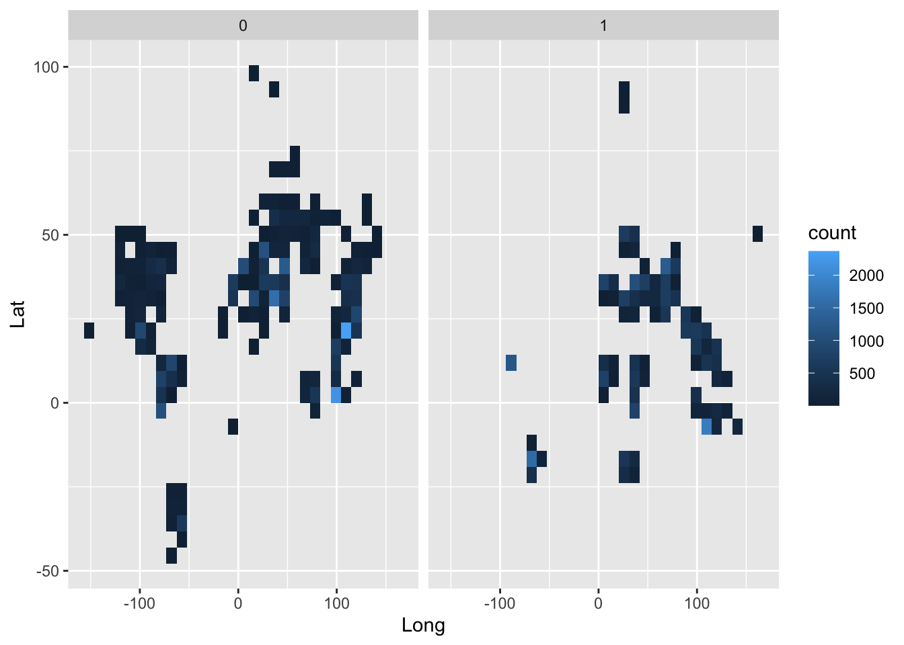
The graph above shows that the Global North (“0”) and South (“1”) are not neatly divided by physical location, due to the existence of developed countries physically located in the South (e.g., South Korea) and developing countries physically located in the North (e.g., Ukraine).
In the previous post, I discussed the prior literature on the topic (predictors of happiness and life satisfaction in Global South vs. North), my RQs and hypotheses, and explored the dataset (WVS Wave 7). I was given feedback to explain my hypotheses better and have edited that section accordingly.
I have added one variable, SocialClass, which was a significant predictor in past papers that I missed out previously. I have also removed several variables I feel are not useful for my RQs (e.g., number of women in parliament).
The response variables are Happiness and LS (life satisfaction). They will be measured separately, as done in prior papers.
The main explanatory variables are PerceivedHealth, FS (financial satisfaction) and NS (country type: North vs. South). A potential interaction between the explanatory variables will be included.
Some notes before commencing analysis:
It is important to note that NS cannot be transformed, since it is categorical. However, if required, log/quadratic transformations can be done for PerceivedHealth or FS.
Since each row represents one participant, the unit of analysis is at the participant level. The NS dummy refers to where the participant comes from, either the Global North or the Global South.
I will be treating FamImpt, FriendsImpt, LeisureImpt, ReligionImpt and Happiness as continuous. I will attempt to verify this for RQ B by running two regressions with FamImpt as categorical vs. continuous.
I went through the variables again and realized I have to change many of them to factors, and reverse code some of them. I will do this in the code chunk below before generating the models.
# change the following variables to factor type.
wvs <- wvs %>% mutate(across(c(B_COUNTRY_ALPHA,H_SETTLEMENT,H_URBRURAL,Trust,Sex,Immigrant,Citizen,Parents,Married,Job,Religion), as.factor))
# reverse code the following variables, such that the largest number reflects agreement.
wvs$FamImpt <- 5-wvs$FamImpt
wvs$FriendsImpt <- 5-wvs$FriendsImpt
wvs$LeisureImpt <- 5-wvs$LeisureImpt
wvs$ReligionImpt <- 5-wvs$ReligionImpt
wvs$Happiness <- 5-wvs$Happiness
wvs$PerceivedHealth <- 6-wvs$PerceivedHealth
wvs$AttendReligious <-8-wvs$AttendReligious
wvs$SocialClass <- 6-wvs$SocialClassHealth and financial satisfaction will positively predict happiness and life satisfaction in the Global South.
Filter the dataset to only include observations from the Global South.
Create plots of health and financial satisfaction against happiness and life satisfaction.
Run a regression model with these variables. Previous papers did not test an interaction between the variables, so I will not do so. There also does not seem to be a meaningful reason to do so.
# create subset of dataset.
subset <- wvs %>% filter(NS == "1")
# i first made bar plots with facet wrapping, but this was not ideal. i also tried a jitter plot (code below), but it also didn't work. i'll use boxplots in the end.
# ggplot(subset, aes(x = FS, y = LS)) + geom_jitter(stat = "identity", width = 0.2, height = 0.1, na.rm = T)
# generate boxplots.
boxplot(LS ~ PerceivedHealth, subset)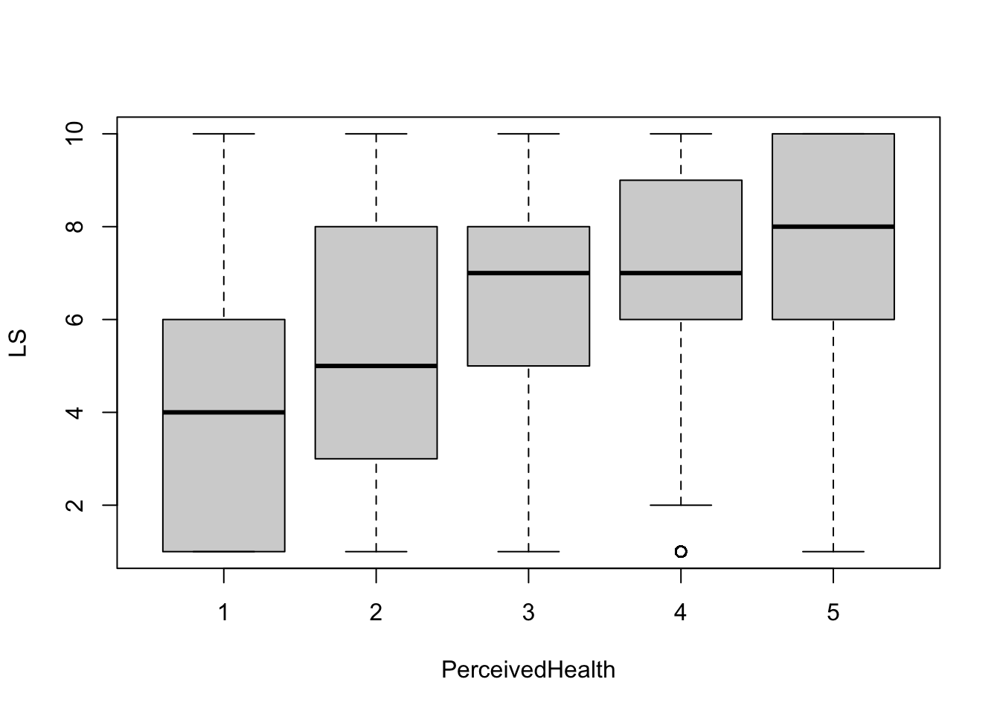
boxplot(LS ~ FS, subset)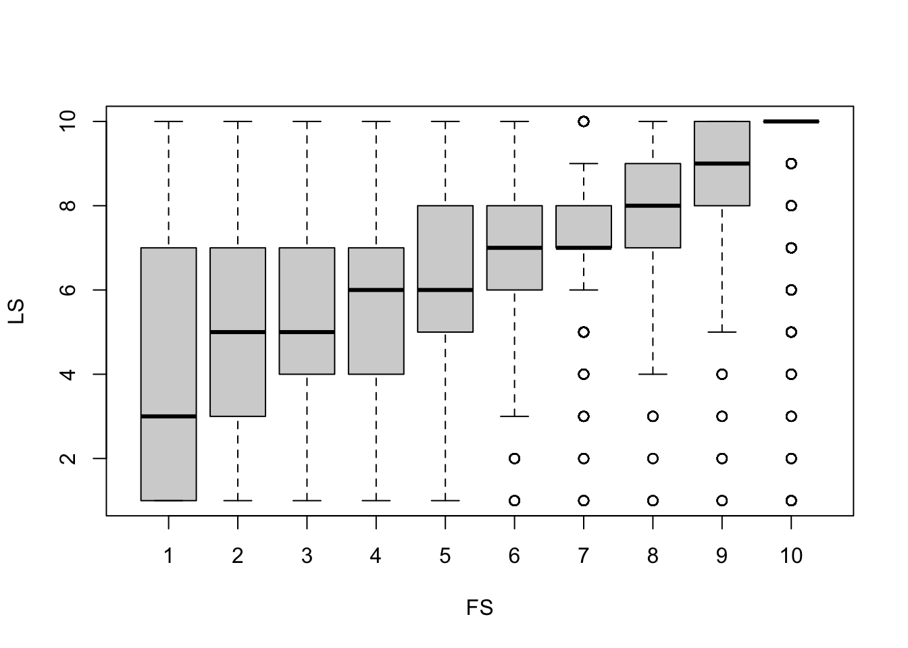
boxplot(Happiness ~ PerceivedHealth, subset)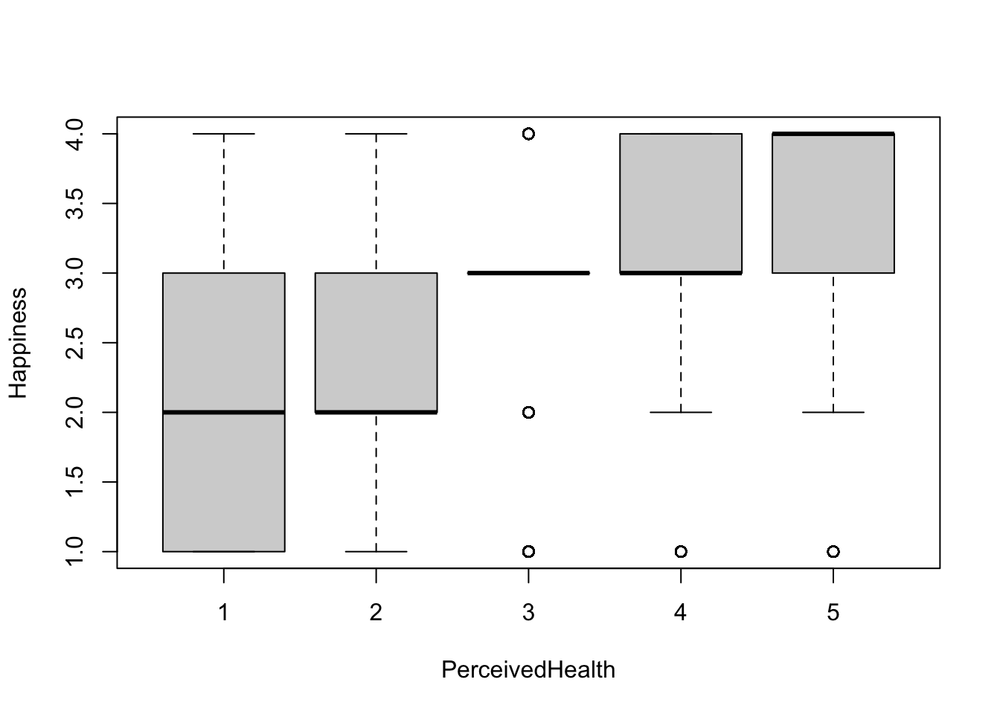
boxplot(Happiness ~ FS, subset)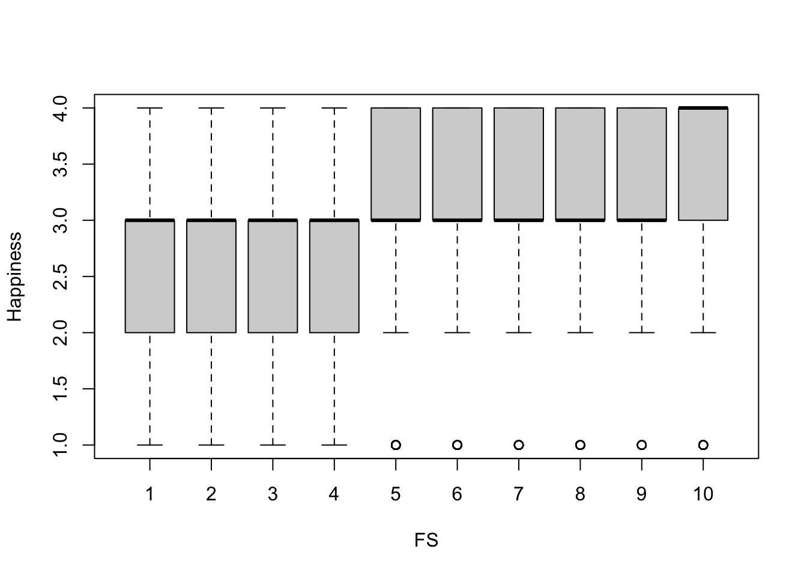
Looking at the boxplots, there seems to be a roughly linear positive relationship between all 4 variables. No transformations should be required to run the regression models.
# run regression model for Happiness.
ModelA_H <- lm(Happiness ~ PerceivedHealth + FS, subset)
summary(ModelA_H)
Call:
lm(formula = Happiness ~ PerceivedHealth + FS, data = subset)
Residuals:
Min 1Q Median 3Q Max
-2.78824 -0.37097 0.01499 0.47464 1.95803
Coefficients:
Estimate Std. Error t value Pr(>|t|)
(Intercept) 1.701889 0.018399 92.50 <2e-16 ***
PerceivedHealth 0.262885 0.004639 56.67 <2e-16 ***
FS 0.077193 0.001582 48.78 <2e-16 ***
---
Signif. codes: 0 '***' 0.001 '**' 0.01 '*' 0.05 '.' 0.1 ' ' 1
Residual standard error: 0.6944 on 28499 degrees of freedom
(142 observations deleted due to missingness)
Multiple R-squared: 0.2025, Adjusted R-squared: 0.2024
F-statistic: 3618 on 2 and 28499 DF, p-value: < 2.2e-16# run regression model for Happiness with demographic controls.
ModelA_H_controls <- lm(Happiness ~ PerceivedHealth + FS + Sex + Age + Immigrant + Citizen + HHSize + Parents + Married + Kids + Edu + Job + SocialClass + Income + Religion, subset)
summary(ModelA_H_controls)
Call:
lm(formula = Happiness ~ PerceivedHealth + FS + Sex + Age + Immigrant +
Citizen + HHSize + Parents + Married + Kids + Edu + Job +
SocialClass + Income + Religion, data = subset)
Residuals:
Min 1Q Median 3Q Max
-2.85651 -0.38630 0.02411 0.50703 2.13673
Coefficients:
Estimate Std. Error t value Pr(>|t|)
(Intercept) 1.629e+00 3.488e-02 46.707 < 2e-16 ***
PerceivedHealth 2.608e-01 4.956e-03 52.615 < 2e-16 ***
FS 7.508e-02 1.700e-03 44.172 < 2e-16 ***
Sex2 8.090e-02 9.718e-03 8.324 < 2e-16 ***
Age -4.815e-05 4.261e-04 -0.113 0.910044
Immigrant2 5.271e-02 5.848e-02 0.901 0.367467
Citizen2 -8.387e-02 8.628e-02 -0.972 0.331025
HHSize 6.807e-03 2.053e-03 3.316 0.000914 ***
Parents2 6.084e-03 1.274e-02 0.478 0.632937
Parents3 2.492e-02 1.878e-02 1.327 0.184554
Parents4 -7.208e-02 5.673e-02 -1.270 0.203939
Married2 -2.291e-02 1.926e-02 -1.190 0.234094
Married3 -1.878e-01 2.980e-02 -6.302 2.99e-10 ***
Married4 -1.990e-01 3.518e-02 -5.658 1.55e-08 ***
Married5 -1.065e-01 2.120e-02 -5.024 5.09e-07 ***
Married6 -7.052e-02 1.496e-02 -4.715 2.43e-06 ***
Kids 4.017e-03 3.149e-03 1.276 0.202050
Edu -1.390e-02 2.447e-03 -5.679 1.37e-08 ***
Job2 -3.250e-03 1.648e-02 -0.197 0.843711
Job3 -1.926e-02 1.238e-02 -1.555 0.119967
Job4 2.946e-02 2.234e-02 1.318 0.187377
Job5 -8.471e-02 1.505e-02 -5.630 1.82e-08 ***
Job6 -2.189e-02 2.068e-02 -1.058 0.289894
Job7 -5.892e-02 1.607e-02 -3.667 0.000246 ***
Job8 -3.689e-02 4.336e-02 -0.851 0.394827
SocialClass 3.316e-02 4.753e-03 6.977 3.10e-12 ***
Income -1.856e-04 2.287e-03 -0.081 0.935317
Religion1 6.950e-02 1.742e-02 3.991 6.61e-05 ***
Religion2 7.609e-02 2.102e-02 3.620 0.000295 ***
Religion3 -1.818e-02 2.265e-02 -0.803 0.422249
Religion4 -1.593e-01 8.440e-02 -1.887 0.059135 .
Religion5 1.240e-02 1.533e-02 0.809 0.418618
Religion6 -3.304e-02 4.661e-02 -0.709 0.478414
Religion7 -1.247e-02 2.091e-02 -0.597 0.550772
Religion8 1.105e-01 2.569e-02 4.302 1.70e-05 ***
Religion9 3.676e-02 4.022e-02 0.914 0.360654
---
Signif. codes: 0 '***' 0.001 '**' 0.01 '*' 0.05 '.' 0.1 ' ' 1
Residual standard error: 0.69 on 26907 degrees of freedom
(1701 observations deleted due to missingness)
Multiple R-squared: 0.2118, Adjusted R-squared: 0.2107
F-statistic: 206.5 on 35 and 26907 DF, p-value: < 2.2e-16# run regression model for LS. for whatever reason, logging PerceivedHealth produced a slightly higher adjusted R^2, but i did not include that because (1) it did not improve the diagnostic plots and (2) PerceivedHealth is not count data (e.g., population/income) that traditionally improves with logging.
ModelA_LS <- lm(LS ~ PerceivedHealth + FS, subset)
summary(ModelA_LS)
Call:
lm(formula = LS ~ PerceivedHealth + FS, data = subset)
Residuals:
Min 1Q Median 3Q Max
-8.3728 -1.1136 0.0639 1.0965 6.6294
Coefficients:
Estimate Std. Error t value Pr(>|t|)
(Intercept) 2.515388 0.054654 46.02 <2e-16 ***
PerceivedHealth 0.338881 0.013790 24.57 <2e-16 ***
FS 0.516304 0.004706 109.72 <2e-16 ***
---
Signif. codes: 0 '***' 0.001 '**' 0.01 '*' 0.05 '.' 0.1 ' ' 1
Residual standard error: 2.064 on 28509 degrees of freedom
(132 observations deleted due to missingness)
Multiple R-squared: 0.3396, Adjusted R-squared: 0.3395
F-statistic: 7329 on 2 and 28509 DF, p-value: < 2.2e-16# run regression model for LS with demographic controls.
ModelA_LS_controls <- lm(LS ~ PerceivedHealth + FS + Sex + Age + Immigrant + Citizen + HHSize + Parents + Married + Kids + Edu + Job + SocialClass + Income + Religion, subset)
summary(ModelA_LS_controls)
Call:
lm(formula = LS ~ PerceivedHealth + FS + Sex + Age + Immigrant +
Citizen + HHSize + Parents + Married + Kids + Edu + Job +
SocialClass + Income + Religion, data = subset)
Residuals:
Min 1Q Median 3Q Max
-9.0351 -1.1901 0.0939 1.1606 7.0551
Coefficients:
Estimate Std. Error t value Pr(>|t|)
(Intercept) 2.252840 0.103753 21.714 < 2e-16 ***
PerceivedHealth 0.374906 0.014743 25.429 < 2e-16 ***
FS 0.501032 0.005058 99.058 < 2e-16 ***
Sex2 0.111760 0.028898 3.867 0.00011 ***
Age 0.005052 0.001267 3.987 6.71e-05 ***
Immigrant2 0.024794 0.172774 0.144 0.88589
Citizen2 0.012178 0.256561 0.047 0.96214
HHSize -0.003993 0.006105 -0.654 0.51306
Parents2 0.137374 0.037897 3.625 0.00029 ***
Parents3 0.127139 0.055866 2.276 0.02287 *
Parents4 -0.175944 0.169331 -1.039 0.29879
Married2 0.038214 0.057252 0.667 0.50448
Married3 -0.281920 0.088449 -3.187 0.00144 **
Married4 -0.363767 0.104647 -3.476 0.00051 ***
Married5 -0.136939 0.062998 -2.174 0.02974 *
Married6 -0.234748 0.044475 -5.278 1.31e-07 ***
Kids 0.003537 0.009349 0.378 0.70518
Edu -0.010311 0.007279 -1.417 0.15663
Job2 0.125980 0.049015 2.570 0.01017 *
Job3 -0.061988 0.036841 -1.683 0.09247 .
Job4 -0.043148 0.066305 -0.651 0.51521
Job5 -0.108559 0.044760 -2.425 0.01530 *
Job6 -0.098398 0.061520 -1.599 0.10973
Job7 -0.220107 0.047815 -4.603 4.18e-06 ***
Job8 0.376925 0.128739 2.928 0.00342 **
SocialClass 0.003458 0.014134 0.245 0.80673
Income 0.019709 0.006803 2.897 0.00377 **
Religion1 0.153145 0.051783 2.957 0.00310 **
Religion2 -0.323565 0.062492 -5.178 2.26e-07 ***
Religion3 -0.405155 0.067274 -6.022 1.74e-09 ***
Religion4 -0.218467 0.251068 -0.870 0.38423
Religion5 -0.039050 0.045606 -0.856 0.39187
Religion6 0.236925 0.138646 1.709 0.08749 .
Religion7 0.021554 0.062184 0.347 0.72888
Religion8 0.397010 0.076415 5.195 2.06e-07 ***
Religion9 0.440675 0.119625 3.684 0.00023 ***
---
Signif. codes: 0 '***' 0.001 '**' 0.01 '*' 0.05 '.' 0.1 ' ' 1
Residual standard error: 2.053 on 26916 degrees of freedom
(1692 observations deleted due to missingness)
Multiple R-squared: 0.3474, Adjusted R-squared: 0.3466
F-statistic: 409.4 on 35 and 26916 DF, p-value: < 2.2e-16To summarise, I ran 4 regression models above - 2 each for Happiness and LS (1 with just the main predictors, and 1 with demographic controls). What’s important to note is that in all the models, even with the addition of demographic control variables, PerceivedHealth and FS positively predict Happiness and LS in the Global South, p < .001. The addition of demographic controls also did not improve adjusted R2 by much - just ~0.01. For RQ A, we can reject the null hypothesis.
# diagnostic plots for the models above.
par(mfrow = c(2,3)); plot(ModelA_H_controls, which = 1:6)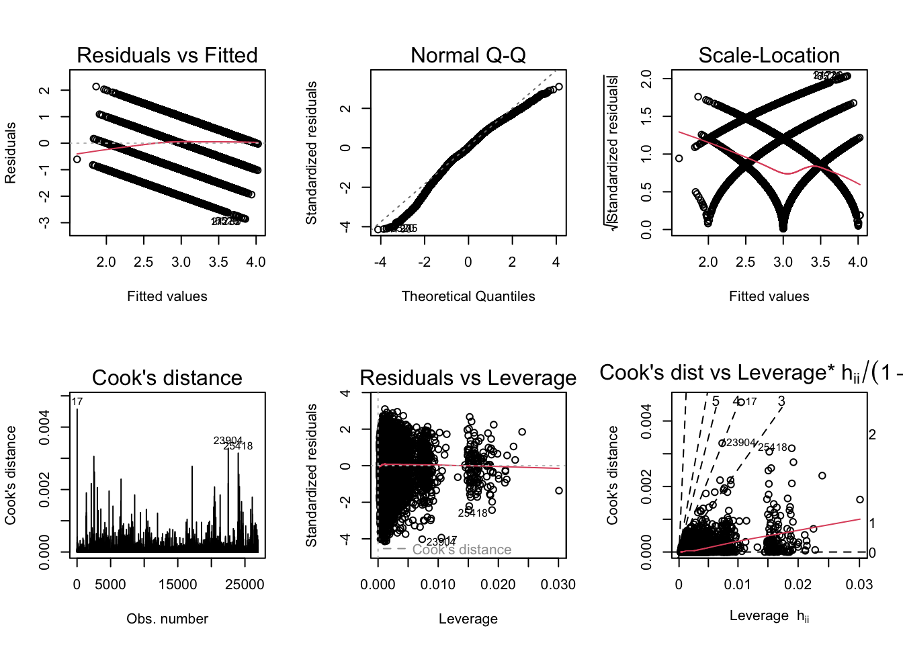
bptest(ModelA_H_controls)
studentized Breusch-Pagan test
data: ModelA_H_controls
BP = 1111.1, df = 35, p-value < 2.2e-16par(mfrow = c(2,3)); plot(ModelA_LS_controls, which = 1:6)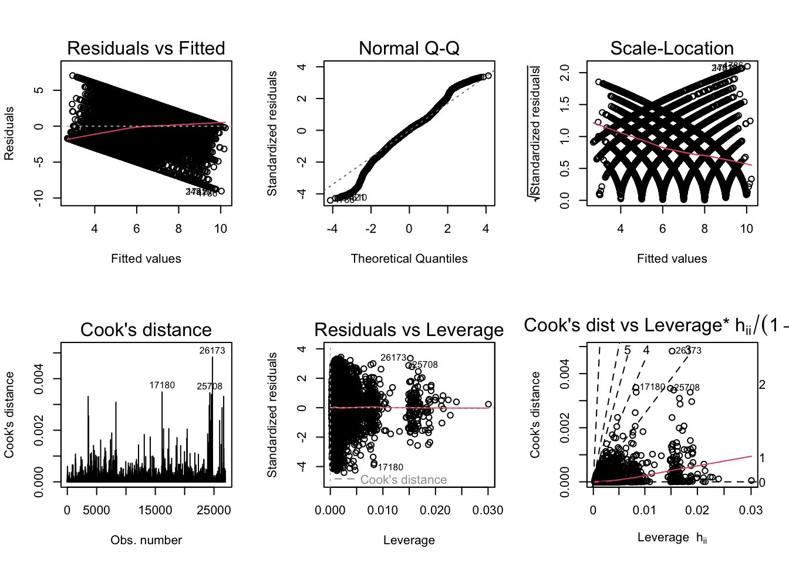
bptest(ModelA_LS_controls)
studentized Breusch-Pagan test
data: ModelA_LS_controls
BP = 1753, df = 35, p-value < 2.2e-16The diagnostic plots generally seem fine except the scale-location plot, which indicates heteroskedasticity. The Breusch-Pagan test helps to confirm this. One way to correct this would be to use robust standard errors.
# obtain robust standard errors for models.
coeftest(ModelA_H_controls, vcov = vcovHC, type = 'HC1')
t test of coefficients:
Estimate Std. Error t value Pr(>|t|)
(Intercept) 1.6290e+00 3.6811e-02 44.2526 < 2.2e-16 ***
PerceivedHealth 2.6076e-01 5.5823e-03 46.7122 < 2.2e-16 ***
FS 7.5078e-02 1.8435e-03 40.7247 < 2.2e-16 ***
Sex2 8.0897e-02 9.7539e-03 8.2938 < 2.2e-16 ***
Age -4.8146e-05 4.3017e-04 -0.1119 0.9108859
Immigrant2 5.2707e-02 5.7875e-02 0.9107 0.3624530
Citizen2 -8.3868e-02 8.0561e-02 -1.0411 0.2978586
HHSize 6.8075e-03 2.3891e-03 2.8494 0.0043833 **
Parents2 6.0841e-03 1.3093e-02 0.4647 0.6421611
Parents3 2.4917e-02 1.8159e-02 1.3722 0.1700264
Parents4 -7.2076e-02 6.2383e-02 -1.1554 0.2479456
Married2 -2.2913e-02 2.0262e-02 -1.1308 0.2581384
Married3 -1.8780e-01 3.2263e-02 -5.8210 5.918e-09 ***
Married4 -1.9903e-01 4.1600e-02 -4.7843 1.725e-06 ***
Married5 -1.0652e-01 2.2111e-02 -4.8175 1.462e-06 ***
Married6 -7.0524e-02 1.5482e-02 -4.5552 5.256e-06 ***
Kids 4.0168e-03 3.3643e-03 1.1939 0.2325112
Edu -1.3898e-02 2.4639e-03 -5.6406 1.711e-08 ***
Job2 -3.2496e-03 1.5661e-02 -0.2075 0.8356224
Job3 -1.9258e-02 1.2231e-02 -1.5744 0.1153957
Job4 2.9459e-02 2.2008e-02 1.3386 0.1807214
Job5 -8.4713e-02 1.4778e-02 -5.7324 1.001e-08 ***
Job6 -2.1886e-02 2.0707e-02 -1.0569 0.2905639
Job7 -5.8923e-02 1.7249e-02 -3.4160 0.0006365 ***
Job8 -3.6892e-02 5.0343e-02 -0.7328 0.4636812
SocialClass 3.3162e-02 4.9316e-03 6.7244 1.799e-11 ***
Income -1.8561e-04 2.3702e-03 -0.0783 0.9375819
Religion1 6.9505e-02 1.8209e-02 3.8170 0.0001354 ***
Religion2 7.6088e-02 2.2839e-02 3.3315 0.0008650 ***
Religion3 -1.8177e-02 2.1665e-02 -0.8390 0.4014735
Religion4 -1.5928e-01 8.7627e-02 -1.8177 0.0691182 .
Religion5 1.2403e-02 1.5230e-02 0.8144 0.4154368
Religion6 -3.3038e-02 3.8184e-02 -0.8652 0.3869116
Religion7 -1.2473e-02 2.0610e-02 -0.6052 0.5450570
Religion8 1.1052e-01 2.5547e-02 4.3261 1.523e-05 ***
Religion9 3.6764e-02 4.3284e-02 0.8494 0.3956905
---
Signif. codes: 0 '***' 0.001 '**' 0.01 '*' 0.05 '.' 0.1 ' ' 1coeftest(ModelA_LS_controls, vcov = vcovHC, type = 'HC1')
t test of coefficients:
Estimate Std. Error t value Pr(>|t|)
(Intercept) 2.2528402 0.1064129 21.1707 < 2.2e-16 ***
PerceivedHealth 0.3749064 0.0162830 23.0244 < 2.2e-16 ***
FS 0.5010321 0.0062128 80.6452 < 2.2e-16 ***
Sex2 0.1117604 0.0289195 3.8645 0.0001116 ***
Age 0.0050525 0.0013206 3.8258 0.0001306 ***
Immigrant2 0.0247937 0.1779629 0.1393 0.8891987
Citizen2 0.0121777 0.2740275 0.0444 0.9645543
HHSize -0.0039932 0.0065037 -0.6140 0.5392264
Parents2 0.1373743 0.0386397 3.5553 0.0003782 ***
Parents3 0.1271390 0.0562443 2.2605 0.0237995 *
Parents4 -0.1759444 0.1602356 -1.0980 0.2721988
Married2 0.0382137 0.0594300 0.6430 0.5202275
Married3 -0.2819201 0.0976985 -2.8856 0.0039096 **
Married4 -0.3637666 0.1143297 -3.1817 0.0014656 **
Married5 -0.1369391 0.0649089 -2.1097 0.0348923 *
Married6 -0.2347479 0.0454759 -5.1620 2.460e-07 ***
Kids 0.0035369 0.0101206 0.3495 0.7267341
Edu -0.0103113 0.0071848 -1.4352 0.1512529
Job2 0.1259797 0.0478372 2.6335 0.0084555 **
Job3 -0.0619882 0.0358968 -1.7268 0.0842075 .
Job4 -0.0431482 0.0646541 -0.6674 0.5045419
Job5 -0.1085591 0.0442199 -2.4550 0.0140953 *
Job6 -0.0983980 0.0588659 -1.6716 0.0946227 .
Job7 -0.2201066 0.0511284 -4.3050 1.676e-05 ***
Job8 0.3769250 0.1471414 2.5617 0.0104230 *
SocialClass 0.0034580 0.0152135 0.2273 0.8201950
Income 0.0197092 0.0074973 2.6289 0.0085720 **
Religion1 0.1531451 0.0503513 3.0415 0.0023560 **
Religion2 -0.3235648 0.0648191 -4.9918 6.019e-07 ***
Religion3 -0.4051554 0.0654854 -6.1870 6.222e-10 ***
Religion4 -0.2184666 0.2857574 -0.7645 0.4445656
Religion5 -0.0390497 0.0411714 -0.9485 0.3429004
Religion6 0.2369245 0.1113743 2.1273 0.0334058 *
Religion7 0.0215541 0.0577008 0.3735 0.7087426
Religion8 0.3970097 0.0738658 5.3747 7.733e-08 ***
Religion9 0.4406754 0.1037644 4.2469 2.175e-05 ***
---
Signif. codes: 0 '***' 0.001 '**' 0.01 '*' 0.05 '.' 0.1 ' ' 1I generated robust standard errors for the models above. Although the t-values have reduced, the predictors are still positive and significant. Hence, we can still reject the null hypothesis.
Health and financial satisfaction will have a greater impact on happiness and life satisfaction on the Global South than the Global North.
I will first run a correlation matrix with all potential numeric variables that might be relevant.
# run correlations for numeric variables (except DVs, which are Happiness and LS).
matrix <- wvs %>% select(PerceivedHealth, FS, G_TOWNSIZE, FamImpt, FriendsImpt, LeisureImpt, ReligionImpt, FOC, AttendReligious, Age, HHSize, Kids, Edu, SocialClass, IncomeR, I_WOMJOB, I_WOMPOL, I_WOMEDU, homolib, abortlib)
cor <- cor(matrix, use="complete.obs")In the correlation matrix, I am concerned about correlations where r ≥ 0.5 (more conservative than a cut-off of r ≥ 0.7). This is observed between AttendReligious and ReligionImpt; and homolib and abortlib. I will try a few different models to figure out which combination of variables might work best.
# try model with "AttendReligious" and "abortlib".
summary(lm(Happiness ~ PerceivedHealth*FS*NS + G_TOWNSIZE + H_URBRURAL + FamImpt + FriendsImpt + LeisureImpt + FOC + Trust + AttendReligious + Sex + Age + Immigrant + Citizen + HHSize + Parents + Married + Kids + Edu + Job + SocialClass + Income + Religion + I_WOMJOB + I_WOMPOL + I_WOMEDU + abortlib, wvs))
Call:
lm(formula = Happiness ~ PerceivedHealth * FS * NS + G_TOWNSIZE +
H_URBRURAL + FamImpt + FriendsImpt + LeisureImpt + FOC +
Trust + AttendReligious + Sex + Age + Immigrant + Citizen +
HHSize + Parents + Married + Kids + Edu + Job + SocialClass +
Income + Religion + I_WOMJOB + I_WOMPOL + I_WOMEDU + abortlib,
data = wvs)
Residuals:
Min 1Q Median 3Q Max
-2.84562 -0.35131 -0.02747 0.46085 2.53907
Coefficients:
Estimate Std. Error t value Pr(>|t|)
(Intercept) 1.0023646 0.0485735 20.636 < 2e-16 ***
PerceivedHealth 0.2417281 0.0091906 26.302 < 2e-16 ***
FS 0.0752496 0.0055272 13.614 < 2e-16 ***
NS1 -0.3760471 0.0494237 -7.609 2.81e-14 ***
G_TOWNSIZE -0.0109366 0.0013678 -7.996 1.31e-15 ***
H_URBRURAL2 0.0398046 0.0071450 5.571 2.54e-08 ***
FamImpt 0.1207622 0.0070036 17.243 < 2e-16 ***
FriendsImpt 0.0249529 0.0034003 7.339 2.18e-13 ***
LeisureImpt 0.0239952 0.0032088 7.478 7.64e-14 ***
FOC 0.0324218 0.0011304 28.682 < 2e-16 ***
Trust2 -0.0242134 0.0061949 -3.909 9.29e-05 ***
AttendReligious 0.0077179 0.0013120 5.882 4.06e-09 ***
Sex2 0.0448632 0.0053685 8.357 < 2e-16 ***
Age -0.0003398 0.0002341 -1.452 0.146603
Immigrant2 0.0048528 0.0121882 0.398 0.690517
Citizen2 0.0346332 0.0198507 1.745 0.081045 .
HHSize 0.0049448 0.0013326 3.711 0.000207 ***
Parents2 -0.0080024 0.0073853 -1.084 0.278566
Parents3 0.0269953 0.0116900 2.309 0.020932 *
Parents4 -0.0226720 0.0315412 -0.719 0.472263
Married2 0.0392866 0.0093657 4.195 2.74e-05 ***
Married3 -0.1071227 0.0130624 -8.201 2.43e-16 ***
Married4 -0.0757703 0.0165779 -4.571 4.87e-06 ***
Married5 -0.0653700 0.0119429 -5.474 4.43e-08 ***
Married6 -0.0475473 0.0081482 -5.835 5.39e-09 ***
Kids 0.0104236 0.0019030 5.477 4.33e-08 ***
Edu -0.0049675 0.0014208 -3.496 0.000472 ***
Job2 0.0321825 0.0093302 3.449 0.000562 ***
Job3 0.0065385 0.0076058 0.860 0.389974
Job4 0.0400777 0.0098986 4.049 5.15e-05 ***
Job5 0.0308835 0.0085066 3.631 0.000283 ***
Job6 0.0239344 0.0116517 2.054 0.039965 *
Job7 -0.0086893 0.0095815 -0.907 0.364470
Job8 0.0333899 0.0243857 1.369 0.170928
SocialClass 0.0325389 0.0029396 11.069 < 2e-16 ***
Income 0.0007032 0.0014035 0.501 0.616341
Religion1 0.0519833 0.0083318 6.239 4.43e-10 ***
Religion2 0.0046457 0.0107478 0.432 0.665564
Religion3 -0.0727053 0.0104960 -6.927 4.34e-12 ***
Religion4 -0.1164567 0.0458200 -2.542 0.011036 *
Religion5 -0.0820015 0.0084759 -9.675 < 2e-16 ***
Religion6 -0.0568803 0.0292758 -1.943 0.052031 .
Religion7 -0.0326901 0.0113023 -2.892 0.003825 **
Religion8 0.0617715 0.0152881 4.040 5.34e-05 ***
Religion9 0.0269946 0.0157294 1.716 0.086132 .
I_WOMJOB 0.0183741 0.0090170 2.038 0.041582 *
I_WOMPOL -0.0080608 0.0094226 -0.855 0.392295
I_WOMEDU -0.0738107 0.0093836 -7.866 3.72e-15 ***
abortlib -0.0091560 0.0009459 -9.679 < 2e-16 ***
PerceivedHealth:FS -0.0042135 0.0014208 -2.966 0.003022 **
PerceivedHealth:NS1 0.0915541 0.0132100 6.931 4.23e-12 ***
FS:NS1 0.0522839 0.0080080 6.529 6.67e-11 ***
PerceivedHealth:FS:NS1 -0.0115482 0.0020588 -5.609 2.04e-08 ***
---
Signif. codes: 0 '***' 0.001 '**' 0.01 '*' 0.05 '.' 0.1 ' ' 1
Residual standard error: 0.6226 on 68392 degrees of freedom
(19377 observations deleted due to missingness)
Multiple R-squared: 0.2346, Adjusted R-squared: 0.2341
F-statistic: 403.2 on 52 and 68392 DF, p-value: < 2.2e-16# try model with "ReligionImpt" and "abortlib".
ModelB_H <- lm(Happiness ~ PerceivedHealth*FS*NS + G_TOWNSIZE + H_URBRURAL + FamImpt + FriendsImpt + LeisureImpt + ReligionImpt + FOC + Trust + Sex + Age + Immigrant + Citizen + HHSize + Parents + Married + Kids + Edu + Job + SocialClass + Income + Religion + I_WOMJOB + I_WOMPOL + I_WOMEDU + abortlib, wvs)
summary(ModelB_H)
Call:
lm(formula = Happiness ~ PerceivedHealth * FS * NS + G_TOWNSIZE +
H_URBRURAL + FamImpt + FriendsImpt + LeisureImpt + ReligionImpt +
FOC + Trust + Sex + Age + Immigrant + Citizen + HHSize +
Parents + Married + Kids + Edu + Job + SocialClass + Income +
Religion + I_WOMJOB + I_WOMPOL + I_WOMEDU + abortlib, data = wvs)
Residuals:
Min 1Q Median 3Q Max
-2.83838 -0.35003 -0.02486 0.45985 2.58146
Coefficients:
Estimate Std. Error t value Pr(>|t|)
(Intercept) 0.9653591 0.0487346 19.808 < 2e-16 ***
PerceivedHealth 0.2427013 0.0091832 26.429 < 2e-16 ***
FS 0.0753615 0.0055248 13.641 < 2e-16 ***
NS1 -0.3875722 0.0493653 -7.851 4.18e-15 ***
G_TOWNSIZE -0.0104199 0.0013679 -7.617 2.62e-14 ***
H_URBRURAL2 0.0409348 0.0071384 5.734 9.82e-09 ***
FamImpt 0.1139240 0.0070337 16.197 < 2e-16 ***
FriendsImpt 0.0239321 0.0033986 7.042 1.92e-12 ***
LeisureImpt 0.0218539 0.0032127 6.802 1.04e-11 ***
ReligionImpt 0.0359167 0.0031719 11.323 < 2e-16 ***
FOC 0.0322169 0.0011295 28.522 < 2e-16 ***
Trust2 -0.0291083 0.0062043 -4.692 2.72e-06 ***
Sex2 0.0415730 0.0053662 7.747 9.52e-15 ***
Age -0.0002997 0.0002339 -1.281 0.200055
Immigrant2 0.0069104 0.0121815 0.567 0.570520
Citizen2 0.0388779 0.0198208 1.961 0.049829 *
HHSize 0.0045529 0.0013320 3.418 0.000631 ***
Parents2 -0.0086985 0.0073777 -1.179 0.238390
Parents3 0.0216617 0.0116667 1.857 0.063356 .
Parents4 -0.0282459 0.0314608 -0.898 0.369288
Married2 0.0394323 0.0093613 4.212 2.53e-05 ***
Married3 -0.1125812 0.0130569 -8.622 < 2e-16 ***
Married4 -0.0795349 0.0165963 -4.792 1.65e-06 ***
Married5 -0.0668593 0.0119429 -5.598 2.17e-08 ***
Married6 -0.0500088 0.0081394 -6.144 8.09e-10 ***
Kids 0.0101190 0.0019017 5.321 1.04e-07 ***
Edu -0.0039301 0.0014214 -2.765 0.005694 **
Job2 0.0299734 0.0093275 3.213 0.001312 **
Job3 0.0051187 0.0076043 0.673 0.500861
Job4 0.0367885 0.0099071 3.713 0.000205 ***
Job5 0.0263369 0.0084946 3.100 0.001933 **
Job6 0.0255340 0.0116272 2.196 0.028091 *
Job7 -0.0123139 0.0095726 -1.286 0.198321
Job8 0.0260058 0.0243860 1.066 0.286237
SocialClass 0.0331230 0.0029360 11.282 < 2e-16 ***
Income 0.0007745 0.0014028 0.552 0.580883
Religion1 0.0356580 0.0084815 4.204 2.62e-05 ***
Religion2 -0.0148305 0.0108456 -1.367 0.171498
Religion3 -0.0949489 0.0107237 -8.854 < 2e-16 ***
Religion4 -0.1352025 0.0458731 -2.947 0.003207 **
Religion5 -0.1116511 0.0090220 -12.375 < 2e-16 ***
Religion6 -0.0804296 0.0294147 -2.734 0.006252 **
Religion7 -0.0484974 0.0114371 -4.240 2.23e-05 ***
Religion8 0.0410340 0.0154060 2.664 0.007735 **
Religion9 0.0127811 0.0157734 0.810 0.417775
I_WOMJOB 0.0209233 0.0090190 2.320 0.020349 *
I_WOMPOL -0.0063906 0.0094151 -0.679 0.497292
I_WOMEDU -0.0730143 0.0093696 -7.793 6.65e-15 ***
abortlib -0.0075929 0.0009610 -7.901 2.82e-15 ***
PerceivedHealth:FS -0.0042494 0.0014202 -2.992 0.002771 **
PerceivedHealth:NS1 0.0932809 0.0131979 7.068 1.59e-12 ***
FS:NS1 0.0535637 0.0080021 6.694 2.19e-11 ***
PerceivedHealth:FS:NS1 -0.0117965 0.0020574 -5.734 9.86e-09 ***
---
Signif. codes: 0 '***' 0.001 '**' 0.01 '*' 0.05 '.' 0.1 ' ' 1
Residual standard error: 0.6226 on 68517 degrees of freedom
(19252 observations deleted due to missingness)
Multiple R-squared: 0.2363, Adjusted R-squared: 0.2357
F-statistic: 407.7 on 52 and 68517 DF, p-value: < 2.2e-16# run model with "FamImpt" as categorical.
summary(lm(Happiness ~ PerceivedHealth*FS*NS + G_TOWNSIZE + H_URBRURAL + as.factor(FamImpt) + FriendsImpt + LeisureImpt + ReligionImpt + FOC + Trust + Sex + Age + Immigrant + Citizen + HHSize + Parents + Married + Kids + Edu + Job + SocialClass + Income + Religion + I_WOMJOB + I_WOMPOL + I_WOMEDU + abortlib, wvs))
Call:
lm(formula = Happiness ~ PerceivedHealth * FS * NS + G_TOWNSIZE +
H_URBRURAL + as.factor(FamImpt) + FriendsImpt + LeisureImpt +
ReligionImpt + FOC + Trust + Sex + Age + Immigrant + Citizen +
HHSize + Parents + Married + Kids + Edu + Job + SocialClass +
Income + Religion + I_WOMJOB + I_WOMPOL + I_WOMEDU + abortlib,
data = wvs)
Residuals:
Min 1Q Median 3Q Max
-2.83836 -0.34998 -0.02473 0.45999 2.60795
Coefficients:
Estimate Std. Error t value Pr(>|t|)
(Intercept) 1.1072339 0.0681742 16.241 < 2e-16 ***
PerceivedHealth 0.2425875 0.0091842 26.414 < 2e-16 ***
FS 0.0752720 0.0055256 13.622 < 2e-16 ***
NS1 -0.3882081 0.0493691 -7.863 3.79e-15 ***
G_TOWNSIZE -0.0104176 0.0013681 -7.615 2.68e-14 ***
H_URBRURAL2 0.0409434 0.0071384 5.736 9.75e-09 ***
as.factor(FamImpt)2 0.0592525 0.0602280 0.984 0.325216
as.factor(FamImpt)3 0.2033328 0.0549154 3.703 0.000214 ***
as.factor(FamImpt)4 0.3138016 0.0544706 5.761 8.40e-09 ***
FriendsImpt 0.0239401 0.0033987 7.044 1.89e-12 ***
LeisureImpt 0.0218856 0.0032129 6.812 9.72e-12 ***
ReligionImpt 0.0359340 0.0031724 11.327 < 2e-16 ***
FOC 0.0322200 0.0011296 28.524 < 2e-16 ***
Trust2 -0.0291466 0.0062056 -4.697 2.65e-06 ***
Sex2 0.0415226 0.0053664 7.738 1.03e-14 ***
Age -0.0002972 0.0002339 -1.270 0.203936
Immigrant2 0.0069407 0.0121817 0.570 0.568840
Citizen2 0.0387761 0.0198213 1.956 0.050435 .
HHSize 0.0045466 0.0013320 3.413 0.000642 ***
Parents2 -0.0088173 0.0073794 -1.195 0.232147
Parents3 0.0217277 0.0116670 1.862 0.062561 .
Parents4 -0.0280973 0.0314612 -0.893 0.371818
Married2 0.0393610 0.0093636 4.204 2.63e-05 ***
Married3 -0.1123870 0.0130579 -8.607 < 2e-16 ***
Married4 -0.0794961 0.0165964 -4.790 1.67e-06 ***
Married5 -0.0668742 0.0119429 -5.599 2.16e-08 ***
Married6 -0.0499130 0.0081398 -6.132 8.73e-10 ***
Kids 0.0101127 0.0019017 5.318 1.05e-07 ***
Edu -0.0039281 0.0014214 -2.764 0.005719 **
Job2 0.0300083 0.0093277 3.217 0.001295 **
Job3 0.0051541 0.0076045 0.678 0.497914
Job4 0.0368074 0.0099073 3.715 0.000203 ***
Job5 0.0263615 0.0084947 3.103 0.001915 **
Job6 0.0255713 0.0116272 2.199 0.027863 *
Job7 -0.0122479 0.0095730 -1.279 0.200754
Job8 0.0259292 0.0243864 1.063 0.287665
SocialClass 0.0331054 0.0029361 11.275 < 2e-16 ***
Income 0.0007985 0.0014030 0.569 0.569271
Religion1 0.0355768 0.0084819 4.194 2.74e-05 ***
Religion2 -0.0147994 0.0108457 -1.365 0.172402
Religion3 -0.0949489 0.0107240 -8.854 < 2e-16 ***
Religion4 -0.1347230 0.0458750 -2.937 0.003318 **
Religion5 -0.1115545 0.0090242 -12.362 < 2e-16 ***
Religion6 -0.0803182 0.0294174 -2.730 0.006329 **
Religion7 -0.0486226 0.0114391 -4.251 2.14e-05 ***
Religion8 0.0408256 0.0154072 2.650 0.008057 **
Religion9 0.0128689 0.0157737 0.816 0.414593
I_WOMJOB 0.0209234 0.0090190 2.320 0.020348 *
I_WOMPOL -0.0064471 0.0094153 -0.685 0.493502
I_WOMEDU -0.0729682 0.0093718 -7.786 7.02e-15 ***
abortlib -0.0075775 0.0009611 -7.884 3.22e-15 ***
PerceivedHealth:FS -0.0042300 0.0014204 -2.978 0.002902 **
PerceivedHealth:NS1 0.0934470 0.0131990 7.080 1.46e-12 ***
FS:NS1 0.0537264 0.0080034 6.713 1.92e-11 ***
PerceivedHealth:FS:NS1 -0.0118354 0.0020577 -5.752 8.87e-09 ***
---
Signif. codes: 0 '***' 0.001 '**' 0.01 '*' 0.05 '.' 0.1 ' ' 1
Residual standard error: 0.6226 on 68515 degrees of freedom
(19252 observations deleted due to missingness)
Multiple R-squared: 0.2363, Adjusted R-squared: 0.2357
F-statistic: 392.6 on 54 and 68515 DF, p-value: < 2.2e-16# try model with "ReligionImpt" and "homolib": adjusted R^2 was lower, so i'm sticking to ModelB_H. significance of main predictors doesn't change either.
summary(lm(Happiness ~ PerceivedHealth*FS*NS + G_TOWNSIZE + H_URBRURAL + FamImpt + FriendsImpt + LeisureImpt + ReligionImpt + FOC + Trust + Sex + Age + Immigrant + Citizen + HHSize + Parents + Married + Kids + Edu + Job + SocialClass + IncomeR + Religion + I_WOMJOB + I_WOMPOL + I_WOMEDU + homolib, wvs))
Call:
lm(formula = Happiness ~ PerceivedHealth * FS * NS + G_TOWNSIZE +
H_URBRURAL + FamImpt + FriendsImpt + LeisureImpt + ReligionImpt +
FOC + Trust + Sex + Age + Immigrant + Citizen + HHSize +
Parents + Married + Kids + Edu + Job + SocialClass + IncomeR +
Religion + I_WOMJOB + I_WOMPOL + I_WOMEDU + homolib, data = wvs)
Residuals:
Min 1Q Median 3Q Max
-2.82527 -0.34776 -0.02813 0.46170 2.57719
Coefficients:
Estimate Std. Error t value Pr(>|t|)
(Intercept) 9.352e-01 4.939e-02 18.934 < 2e-16 ***
PerceivedHealth 2.391e-01 9.295e-03 25.728 < 2e-16 ***
FS 7.412e-02 5.575e-03 13.296 < 2e-16 ***
NS1 -3.655e-01 5.080e-02 -7.194 6.34e-13 ***
G_TOWNSIZE -7.377e-03 1.393e-03 -5.295 1.20e-07 ***
H_URBRURAL2 4.442e-02 7.274e-03 6.107 1.02e-09 ***
FamImpt 1.179e-01 7.079e-03 16.661 < 2e-16 ***
FriendsImpt 2.194e-02 3.486e-03 6.293 3.14e-10 ***
LeisureImpt 1.999e-02 3.324e-03 6.013 1.83e-09 ***
ReligionImpt 4.532e-02 3.186e-03 14.224 < 2e-16 ***
FOC 3.203e-02 1.156e-03 27.711 < 2e-16 ***
Trust2 -1.941e-02 6.334e-03 -3.064 0.002184 **
Sex2 3.663e-02 5.473e-03 6.693 2.21e-11 ***
Age -6.294e-04 2.394e-04 -2.629 0.008555 **
Immigrant2 8.568e-03 1.221e-02 0.702 0.482983
Citizen2 3.916e-02 1.985e-02 1.973 0.048524 *
HHSize 2.562e-03 1.377e-03 1.861 0.062696 .
Parents2 -6.188e-03 7.519e-03 -0.823 0.410536
Parents3 3.009e-02 1.212e-02 2.483 0.013020 *
Parents4 -2.584e-02 3.217e-02 -0.803 0.421753
Married2 3.385e-02 9.428e-03 3.590 0.000331 ***
Married3 -1.082e-01 1.326e-02 -8.162 3.34e-16 ***
Married4 -7.639e-02 1.688e-02 -4.525 6.06e-06 ***
Married5 -6.989e-02 1.231e-02 -5.676 1.39e-08 ***
Married6 -5.380e-02 8.288e-03 -6.491 8.58e-11 ***
Kids 9.797e-03 1.952e-03 5.019 5.21e-07 ***
Edu -6.213e-03 1.460e-03 -4.256 2.09e-05 ***
Job2 3.939e-02 9.561e-03 4.120 3.80e-05 ***
Job3 1.194e-02 7.739e-03 1.543 0.122926
Job4 3.650e-02 1.012e-02 3.607 0.000310 ***
Job5 3.441e-02 8.731e-03 3.941 8.11e-05 ***
Job6 2.356e-02 1.187e-02 1.985 0.047189 *
Job7 -2.361e-02 9.918e-03 -2.381 0.017287 *
Job8 2.882e-02 2.483e-02 1.161 0.245692
SocialClass 2.947e-02 2.934e-03 10.046 < 2e-16 ***
IncomeR 6.624e-03 4.955e-03 1.337 0.181299
Religion1 3.819e-02 8.529e-03 4.478 7.56e-06 ***
Religion2 -1.602e-02 1.094e-02 -1.464 0.143063
Religion3 -9.595e-02 1.093e-02 -8.777 < 2e-16 ***
Religion4 -1.403e-01 4.582e-02 -3.061 0.002207 **
Religion5 -1.144e-01 9.290e-03 -12.318 < 2e-16 ***
Religion6 -8.127e-02 2.935e-02 -2.769 0.005632 **
Religion7 -4.454e-02 1.148e-02 -3.881 0.000104 ***
Religion8 4.505e-02 1.560e-02 2.888 0.003875 **
Religion9 1.857e-02 1.585e-02 1.172 0.241385
I_WOMJOB 8.150e-03 9.281e-03 0.878 0.379913
I_WOMPOL -1.148e-02 9.708e-03 -1.182 0.237049
I_WOMEDU -6.899e-02 9.770e-03 -7.062 1.66e-12 ***
homolib 2.897e-05 9.231e-04 0.031 0.974960
PerceivedHealth:FS -3.838e-03 1.433e-03 -2.678 0.007418 **
PerceivedHealth:NS1 9.339e-02 1.355e-02 6.891 5.60e-12 ***
FS:NS1 4.705e-02 8.226e-03 5.719 1.08e-08 ***
PerceivedHealth:FS:NS1 -1.121e-02 2.111e-03 -5.309 1.11e-07 ***
---
Signif. codes: 0 '***' 0.001 '**' 0.01 '*' 0.05 '.' 0.1 ' ' 1
Residual standard error: 0.622 on 65328 degrees of freedom
(22441 observations deleted due to missingness)
Multiple R-squared: 0.231, Adjusted R-squared: 0.2304
F-statistic: 377.4 on 52 and 65328 DF, p-value: < 2.2e-16Looking at adjusted R2, ReligionImpt is preferable to AttendReligious, and abortlib is preferable to homolib.
I also ran another model to see how things change when FamImpt is treated as categorical: adjusted R2 remained the same, but the standard errors rose and t-values went down. Hence, I will stick to treating it as numeric (as well as other ordered variables with 4 levels).
Additionally, in past papers, adjusted R2 ranged between 0.15 to 0.3 for happiness. Ours is in the higher part of that range (adjusted R2 = 0.24).
For the final model I settled on (labelled as ModelB_H above), a three-way interaction between PerceivedHealth, FS and NS was observed. I will plot this graphically.
interact_plot(ModelB_H, pred = PerceivedHealth, modx = FS, modx.values = c(1,10), mod2 = NS)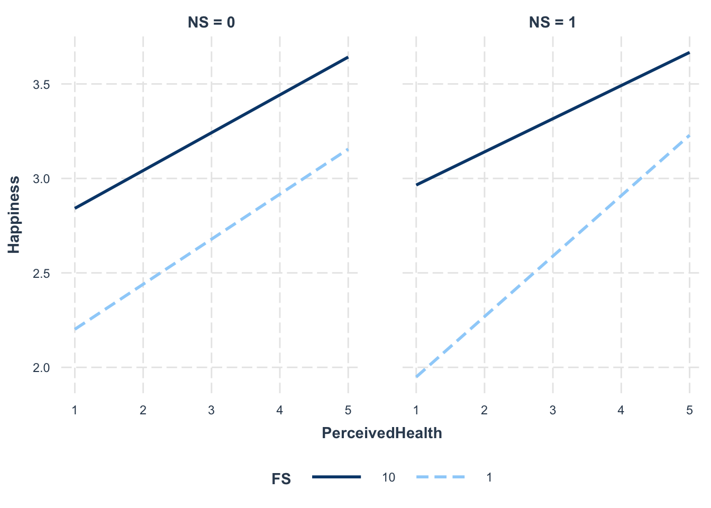
For people in the Global North (NS = 0), it seems like the magnitude of the relationship between PerceivedHealth and Happiness does not change for different values of FS. However, for those in the Global South, the relationship seems to become less steep for greater values of FS. As FS increases, the impact of PerceivedHealth on Happiness reduces. I think at least partially, this shows that Happiness depends more on PerceivedHealth and FS in the Global South (but I am not 100% sure that my interpretation is correct).
To fully answer the RQ, I now need to re-run the same model with LS as the DV.
# run model.
ModelB_LS <- lm(LS ~ PerceivedHealth*FS*NS + G_TOWNSIZE + H_URBRURAL + FamImpt + FriendsImpt + LeisureImpt + ReligionImpt + FOC + Trust + Sex + Age + Immigrant + Citizen + HHSize + Parents + Married + Kids + Edu + Job + SocialClass + Income + Religion + I_WOMJOB + I_WOMPOL + I_WOMEDU + abortlib, wvs)
summary(ModelB_LS)
Call:
lm(formula = LS ~ PerceivedHealth * FS * NS + G_TOWNSIZE + H_URBRURAL +
FamImpt + FriendsImpt + LeisureImpt + ReligionImpt + FOC +
Trust + Sex + Age + Immigrant + Citizen + HHSize + Parents +
Married + Kids + Edu + Job + SocialClass + Income + Religion +
I_WOMJOB + I_WOMPOL + I_WOMEDU + abortlib, data = wvs)
Residuals:
Min 1Q Median 3Q Max
-9.0761 -0.9137 0.0669 0.9278 8.1280
Coefficients:
Estimate Std. Error t value Pr(>|t|)
(Intercept) 0.118394 0.135781 0.872 0.383240
PerceivedHealth 0.517614 0.025575 20.239 < 2e-16 ***
FS 0.489514 0.015392 31.803 < 2e-16 ***
NS1 -0.329556 0.137541 -2.396 0.016575 *
G_TOWNSIZE -0.024345 0.003814 -6.384 1.74e-10 ***
H_URBRURAL2 -0.028291 0.019904 -1.421 0.155220
FamImpt 0.167848 0.019595 8.566 < 2e-16 ***
FriendsImpt -0.018183 0.009471 -1.920 0.054868 .
LeisureImpt 0.018509 0.008955 2.067 0.038750 *
ReligionImpt 0.058195 0.008839 6.584 4.62e-11 ***
FOC 0.241036 0.003148 76.576 < 2e-16 ***
Trust2 0.030117 0.017293 1.742 0.081591 .
Sex2 0.055853 0.014955 3.735 0.000188 ***
Age 0.004196 0.000652 6.436 1.23e-10 ***
Immigrant2 0.048708 0.033967 1.434 0.151591
Citizen2 -0.005785 0.055315 -0.105 0.916707
HHSize -0.012284 0.003713 -3.308 0.000940 ***
Parents2 0.005514 0.020563 0.268 0.788601
Parents3 0.026205 0.032533 0.805 0.420553
Parents4 -0.232785 0.087756 -2.653 0.007988 **
Married2 0.209746 0.026089 8.040 9.15e-16 ***
Married3 -0.128045 0.036375 -3.520 0.000432 ***
Married4 -0.107591 0.046250 -2.326 0.020005 *
Married5 -0.093412 0.033257 -2.809 0.004974 **
Married6 -0.101216 0.022679 -4.463 8.10e-06 ***
Kids 0.019528 0.005297 3.687 0.000227 ***
Edu -0.011649 0.003962 -2.940 0.003285 **
Job2 0.095599 0.025989 3.678 0.000235 ***
Job3 -0.028597 0.021202 -1.349 0.177418
Job4 0.069394 0.027600 2.514 0.011932 *
Job5 0.052595 0.023680 2.221 0.026348 *
Job6 0.054279 0.032410 1.675 0.093984 .
Job7 -0.109330 0.026686 -4.097 4.19e-05 ***
Job8 0.125121 0.068019 1.840 0.065846 .
SocialClass 0.019626 0.008183 2.398 0.016474 *
Income 0.005628 0.003911 1.439 0.150099
Religion1 0.111241 0.023636 4.706 2.53e-06 ***
Religion2 -0.155857 0.030234 -5.155 2.54e-07 ***
Religion3 -0.269519 0.029872 -9.023 < 2e-16 ***
Religion4 -0.290707 0.127955 -2.272 0.023093 *
Religion5 -0.314493 0.025148 -12.506 < 2e-16 ***
Religion6 -0.042414 0.081963 -0.517 0.604825
Religion7 -0.152603 0.031879 -4.787 1.70e-06 ***
Religion8 0.233037 0.042930 5.428 5.71e-08 ***
Religion9 -0.001271 0.043950 -0.029 0.976926
I_WOMJOB 0.034039 0.025140 1.354 0.175740
I_WOMPOL 0.081730 0.026240 3.115 0.001842 **
I_WOMEDU 0.036452 0.026119 1.396 0.162834
abortlib -0.025280 0.002678 -9.439 < 2e-16 ***
PerceivedHealth:FS -0.027077 0.003957 -6.843 7.81e-12 ***
PerceivedHealth:NS1 -0.027232 0.036778 -0.740 0.459037
FS:NS1 0.085490 0.022307 3.832 0.000127 ***
PerceivedHealth:FS:NS1 -0.004343 0.005735 -0.757 0.448892
---
Signif. codes: 0 '***' 0.001 '**' 0.01 '*' 0.05 '.' 0.1 ' ' 1
Residual standard error: 1.737 on 68623 degrees of freedom
(19146 observations deleted due to missingness)
Multiple R-squared: 0.411, Adjusted R-squared: 0.4106
F-statistic: 920.9 on 52 and 68623 DF, p-value: < 2.2e-16For the model with LS as the DV, the adjusted R2 of 0.41 for life satisfaction is in line with past papers (range: 0.16 to 0.5).
There is no three-way interaction. Only 2 of the two-way interactions are significant - PerceivedHealth*FS and FS*NS. I will plot these graphs to interpret them.
# plot interactions.
interact_plot(ModelB_LS, pred = PerceivedHealth, modx = FS, modx.values = c(1,10))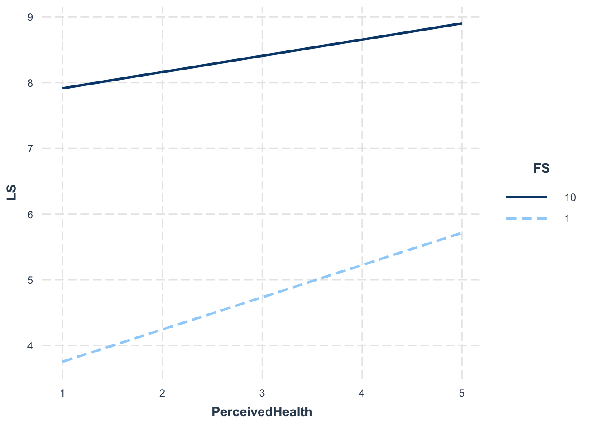
interact_plot(ModelB_LS, pred = FS, modx = NS)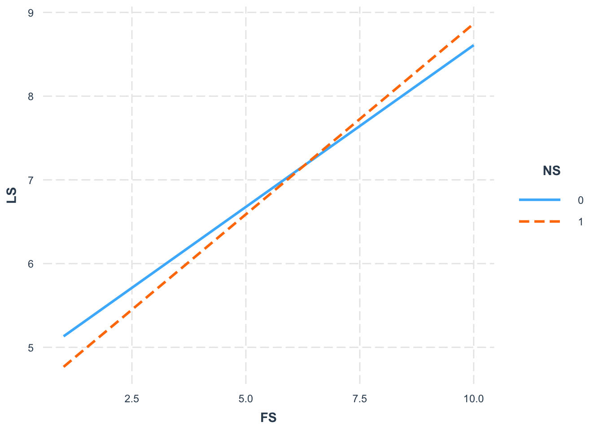
PerceivedHealth*FS: FS seems to limit the effect of PerceivedHealth on LS, regardless of whether the person is from the Global North/South.
FS*NS: There seems to be a stronger effect of FS on LS for the Global South (NS = 1).
Now I will generate the diagnostic plots for ModelB_H and ModelB_LS.
par(mfrow = c(2,3)); plot(ModelB_H, which = 1:6)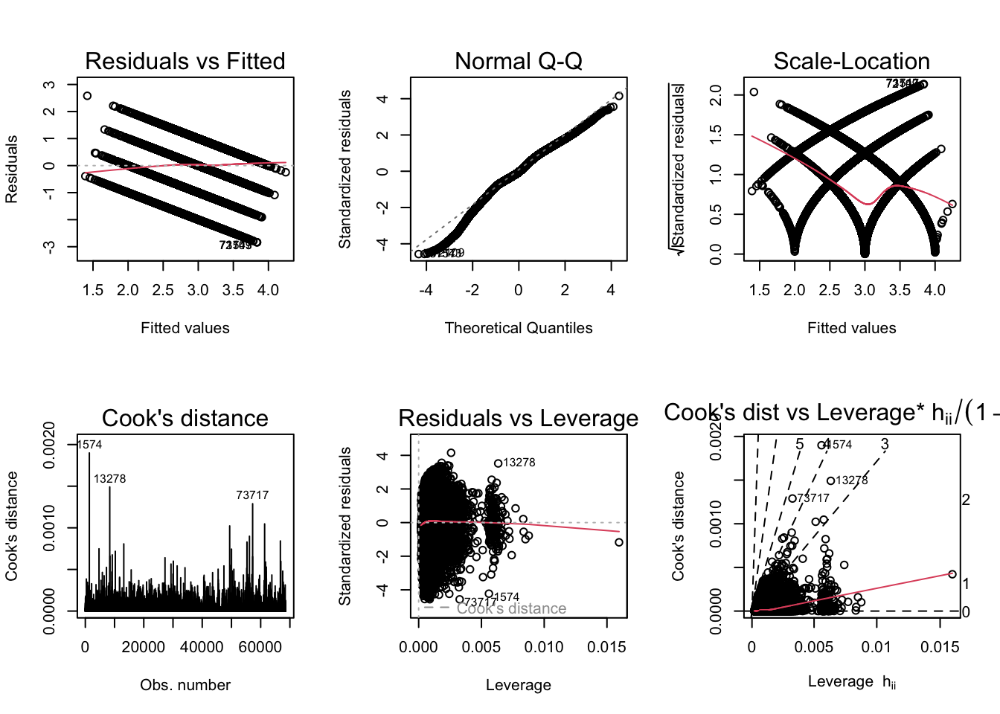
bptest(ModelB_H)
studentized Breusch-Pagan test
data: ModelB_H
BP = 3520.9, df = 52, p-value < 2.2e-16par(mfrow = c(2,3)); plot(ModelB_LS, which = 1:6)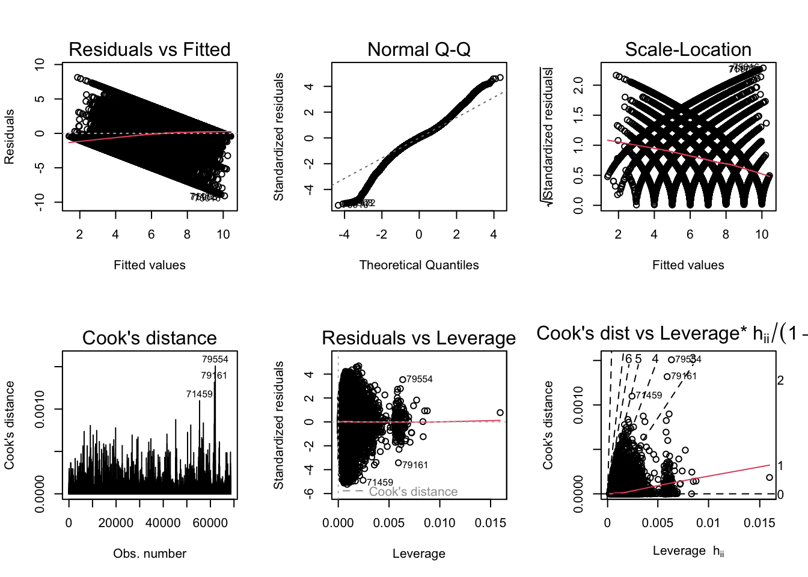
bptest(ModelB_LS)
studentized Breusch-Pagan test
data: ModelB_LS
BP = 6066.6, df = 52, p-value < 2.2e-16Similar to what was observed for RQ A, the scale-location plot indicates heteroskedasticity (confirmed by the Breusch-Pagan test). I will generate robust standard errors for both models.
# obtain robust standard errors for models.
coeftest(ModelB_H, vcov = vcovHC, type = 'HC1')
t test of coefficients:
Estimate Std. Error t value Pr(>|t|)
(Intercept) 0.96535914 0.05634466 17.1331 < 2.2e-16 ***
PerceivedHealth 0.24270127 0.01144805 21.2002 < 2.2e-16 ***
FS 0.07536150 0.00666454 11.3078 < 2.2e-16 ***
NS1 -0.38757224 0.06503656 -5.9593 2.546e-09 ***
G_TOWNSIZE -0.01041991 0.00139078 -7.4922 6.856e-14 ***
H_URBRURAL2 0.04093482 0.00730926 5.6004 2.147e-08 ***
FamImpt 0.11392400 0.00748668 15.2169 < 2.2e-16 ***
FriendsImpt 0.02393210 0.00367876 6.5055 7.798e-11 ***
LeisureImpt 0.02185385 0.00344548 6.3428 2.271e-10 ***
ReligionImpt 0.03591670 0.00323280 11.1101 < 2.2e-16 ***
FOC 0.03221690 0.00130500 24.6873 < 2.2e-16 ***
Trust2 -0.02910827 0.00572731 -5.0824 3.737e-07 ***
Sex2 0.04157302 0.00534434 7.7789 7.418e-15 ***
Age -0.00029973 0.00023855 -1.2565 0.208953
Immigrant2 0.00691044 0.01077333 0.6414 0.521240
Citizen2 0.03887792 0.01796379 2.1642 0.030449 *
HHSize 0.00455286 0.00154128 2.9539 0.003138 **
Parents2 -0.00869855 0.00767204 -1.1338 0.256883
Parents3 0.02166174 0.01212325 1.7868 0.073975 .
Parents4 -0.02824595 0.03476356 -0.8125 0.416498
Married2 0.03943227 0.00968852 4.0700 4.707e-05 ***
Married3 -0.11258117 0.01339883 -8.4023 < 2.2e-16 ***
Married4 -0.07953490 0.01853927 -4.2901 1.789e-05 ***
Married5 -0.06685929 0.01270208 -5.2636 1.416e-07 ***
Married6 -0.05000883 0.00828032 -6.0395 1.554e-09 ***
Kids 0.01011896 0.00206435 4.9018 9.520e-07 ***
Edu -0.00393011 0.00142772 -2.7527 0.005912 **
Job2 0.02997341 0.00914822 3.2764 0.001052 **
Job3 0.00511872 0.00782594 0.6541 0.513068
Job4 0.03678854 0.00968219 3.7996 0.000145 ***
Job5 0.02633692 0.00851043 3.0947 0.001971 **
Job6 0.02553402 0.01142623 2.2347 0.025441 *
Job7 -0.01231387 0.01055162 -1.1670 0.243209
Job8 0.02600579 0.02677949 0.9711 0.331498
SocialClass 0.03312301 0.00311454 10.6349 < 2.2e-16 ***
Income 0.00077450 0.00147361 0.5256 0.599183
Religion1 0.03565801 0.00846033 4.2147 2.504e-05 ***
Religion2 -0.01483054 0.01087377 -1.3639 0.172609
Religion3 -0.09494892 0.01080759 -8.7854 < 2.2e-16 ***
Religion4 -0.13520247 0.04550734 -2.9710 0.002969 **
Religion5 -0.11165106 0.00919236 -12.1461 < 2.2e-16 ***
Religion6 -0.08042960 0.02698805 -2.9802 0.002882 **
Religion7 -0.04849738 0.01087110 -4.4611 8.166e-06 ***
Religion8 0.04103402 0.01560114 2.6302 0.008536 **
Religion9 0.01278109 0.01514373 0.8440 0.398680
I_WOMJOB 0.02092325 0.00951658 2.1986 0.027909 *
I_WOMPOL -0.00639059 0.01005827 -0.6354 0.525198
I_WOMEDU -0.07301433 0.01000503 -7.2978 2.958e-13 ***
abortlib -0.00759285 0.00097437 -7.7926 6.657e-15 ***
PerceivedHealth:FS -0.00424937 0.00167731 -2.5334 0.011297 *
PerceivedHealth:NS1 0.09328088 0.01707000 5.4646 4.655e-08 ***
FS:NS1 0.05356371 0.00996608 5.3746 7.700e-08 ***
PerceivedHealth:FS:NS1 -0.01179646 0.00251070 -4.6985 2.626e-06 ***
---
Signif. codes: 0 '***' 0.001 '**' 0.01 '*' 0.05 '.' 0.1 ' ' 1coeftest(ModelB_LS, vcov = vcovHC, type = 'HC1')
t test of coefficients:
Estimate Std. Error t value Pr(>|t|)
(Intercept) 0.11839390 0.15647523 0.7566 0.4492740
PerceivedHealth 0.51761407 0.03262995 15.8632 < 2.2e-16 ***
FS 0.48951395 0.01878447 26.0595 < 2.2e-16 ***
NS1 -0.32955582 0.19624677 -1.6793 0.0930995 .
G_TOWNSIZE -0.02434490 0.00386763 -6.2945 3.102e-10 ***
H_URBRURAL2 -0.02829065 0.02086088 -1.3562 0.1750534
FamImpt 0.16784807 0.02052719 8.1769 2.962e-16 ***
FriendsImpt -0.01818347 0.01028087 -1.7687 0.0769533 .
LeisureImpt 0.01850893 0.00977097 1.8943 0.0581924 .
ReligionImpt 0.05819543 0.00862565 6.7468 1.523e-11 ***
FOC 0.24103567 0.00427540 56.3773 < 2.2e-16 ***
Trust2 0.03011720 0.01557963 1.9331 0.0532263 .
Sex2 0.05585260 0.01478280 3.7782 0.0001581 ***
Age 0.00419594 0.00067759 6.1925 5.957e-10 ***
Immigrant2 0.04870756 0.02822134 1.7259 0.0843677 .
Citizen2 -0.00578498 0.04589833 -0.1260 0.8997014
HHSize -0.01228380 0.00417933 -2.9392 0.0032919 **
Parents2 0.00551351 0.02111411 0.2611 0.7939937
Parents3 0.02620458 0.03506813 0.7472 0.4549165
Parents4 -0.23278509 0.08357550 -2.7853 0.0053488 **
Married2 0.20974578 0.02636583 7.9552 1.815e-15 ***
Married3 -0.12804540 0.03611182 -3.5458 0.0003917 ***
Married4 -0.10759093 0.04846076 -2.2202 0.0264107 *
Married5 -0.09341168 0.03561537 -2.6228 0.0087232 **
Married6 -0.10121559 0.02296190 -4.4080 1.045e-05 ***
Kids 0.01952766 0.00589338 3.3135 0.0009219 ***
Edu -0.01164860 0.00398015 -2.9267 0.0034272 **
Job2 0.09559875 0.02580836 3.7042 0.0002122 ***
Job3 -0.02859702 0.02178343 -1.3128 0.1892589
Job4 0.06939360 0.02637211 2.6313 0.0085072 **
Job5 0.05259493 0.02402791 2.1889 0.0286067 *
Job6 0.05427933 0.03125783 1.7365 0.0824793 .
Job7 -0.10932964 0.03054728 -3.5790 0.0003451 ***
Job8 0.12512155 0.07189406 1.7404 0.0818003 .
SocialClass 0.01962597 0.00901434 2.1772 0.0294694 *
Income 0.00562853 0.00438793 1.2827 0.1995906
Religion1 0.11124113 0.02298752 4.8392 1.306e-06 ***
Religion2 -0.15585713 0.02994334 -5.2051 1.945e-07 ***
Religion3 -0.26951940 0.02976146 -9.0560 < 2.2e-16 ***
Religion4 -0.29070744 0.12026620 -2.4172 0.0156430 *
Religion5 -0.31449248 0.02519223 -12.4837 < 2.2e-16 ***
Religion6 -0.04241378 0.07059987 -0.6008 0.5480000
Religion7 -0.15260268 0.02876183 -5.3057 1.126e-07 ***
Religion8 0.23303695 0.04394884 5.3025 1.146e-07 ***
Religion9 -0.00127116 0.03863632 -0.0329 0.9737539
I_WOMJOB 0.03403916 0.02709696 1.2562 0.2090483
I_WOMPOL 0.08173040 0.02906210 2.8123 0.0049208 **
I_WOMEDU 0.03645214 0.02900196 1.2569 0.2087994
abortlib -0.02528014 0.00273160 -9.2547 < 2.2e-16 ***
PerceivedHealth:FS -0.02707689 0.00475419 -5.6954 1.236e-08 ***
PerceivedHealth:NS1 -0.02723172 0.05270169 -0.5167 0.6053572
FS:NS1 0.08549005 0.02984951 2.8640 0.0041841 **
PerceivedHealth:FS:NS1 -0.00434316 0.00765981 -0.5670 0.5707115
---
Signif. codes: 0 '***' 0.001 '**' 0.01 '*' 0.05 '.' 0.1 ' ' 1For ModelB_H, zooming in on the three-way interaction between PerceivedHealth*FS*NS: the magnitude of the t-value reduces, but remains significant, p < .001.
For ModelB_LS, the results are similar: t-values go up, but both PerceivedHealth*FS and FS*NS remain significant.
Summarizing the results for both happiness and life satisfaction:
Perceived health and financial satisfaction seem to have a greater impact on happiness in the Global South.
Financial satisfaction has a greater impact on life satisfaction in the Global South.
However, perceived health did not have a different effect on life satisfaction in the Global North vs. South.
Given the third point, we cannot reject the null hypothesis for RQ B. However, I want to caution that I am not sure if I am interpreting the results correctly.
I am also wondering…is there a function/package in R that can generate the model equations easily for me, especially since I included so many controls?
This is definitely a work-in-progress and will be edited further upon receiving feedback. Other things I want to try before submitting the final product in December:
I had included variables measuring equality of gender/sexual orientation and abortion attitudes in the regression, just out of curiosity. I would like to interpret whether they had significant effects on happiness and life satisfaction.
There are some outliers indicated in the diagnostic plots. Removing them could potentially improve my final 4 models (ModelA_H_controls, ModelA_LS_controls, ModelB_H and ModelB_LS).
Addai, I., Opoku-Agyeman, C., & Amanfu, S. (2013). Exploring Predictors of Subjective Well-Being in Ghana: A Micro-Level Study. Journal Of Happiness Studies, 15(4), 869-890.
Alba, C. (2019). A Data Analysis of the World Happiness Index and its Relation to the North-South Divide. Undergraduate Economic Review, 16(1).
Haerpfer, C., Inglehart, R., Moreno, A., Welzel, C., Kizilova, K., Diez-Medrano J., M. Lagos, P. Norris, E. Ponarin & B. Puranen (eds.). 2022. World Values Survey: Round Seven - Country-Pooled Datafile Version 4.0. Madrid, Spain & Vienna, Austria: JD Systems Institute & WVSA Secretariat.
Ngamaba, K. (2016). Happiness and life satisfaction in Rwanda. Journal Of Psychology In Africa, 26(5), 407-414.
World Bank Country and Lending Groups. World Bank Data Help Desk. (2022). Retrieved from https://datahelpdesk.worldbank.org/knowledgebase/articles/906519-world-bank-country-and-lending-groups.
WVS Database. World Values Survey. (2022). Retrieved from https://www.worldvaluessurvey.org/WVSDocumentationWV7.jsp.